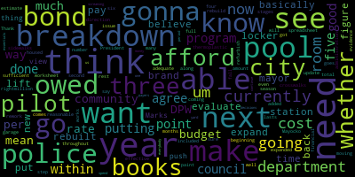

AI-generated transcript of May 28, 2013 City Council of Medford, Massachusetts Full upload of complete council meeting
Back to all transcripts
[Camuso]: You on? The 19th regular meeting of the Medford City Council will come to order. The clerk will call the roll.
[Clerk]: Councilor Camuso? Present. Councilor Caraviello? Present. Vice President De La Rosa? Present. Councilor McCray? Councilor Marks? Present. President Mayorkas.
[Camuso]: Present. Six members present, one absent. Kindly please rise to salute the flag. I pledge allegiance to the flag of the United States of America, and to the Republic for which it stands, one nation, under God, indivisible, with liberty and justice for all. On page one, motions, orders, and resolutions. 2013-500, offered by Councilor Camuso. Be it resolved that the Department of Public Work repaint the crosswalks at Method Street and Albion Street in the interest of public safety. Mr. Del Russo. Thank you, Mr. President. As the weather gets nicer, the DPW is embarking upon the repainting of the crosswalks, specifically Medford Street and Albion Street. Very busy intersection, and a lot of the children in the South Medford neighborhood use that to get to the Columbus School. So if they can get that on the top of the list when they're out there. Vice President Del Russo.
[Dello Russo]: I agree with that 100%. uh, chiming in here is because Medford street was mentioned, uh, which seems to be more of a gravel path these days. And I'm wondering if, uh, if the council wouldn't mind me amending this to include that the DPW commissioner, uh, uh, examine ways that we can perhaps resurface Medford street on the motion of council.
[Camuso]: So it's amended by vice president Dello Russo. On that motion, Councilor Penta?
[Penta]: On that motion, Councilor Dello Russo's amendment, we just got a notice I think today relative to a meeting that's going to take place on June 3rd by the folks that are doing the work over there. So that may be something you may want to bring up for the purpose of letting them pay to do the road. So it's in your, pardon me? You want to amend that further? Yeah, amend it further, yes. Why don't you repeat that again? The amendment is that the Department of Transportation is having a public meeting on June 3rd. I believe it's in Boston. We got a notice today in our emails. There's one of six locations, that's the next one coming up, and that will make reference to Councilor Camuso's and Councilor De La Rosa's thoughts relative to Medford Street.
[Dello Russo]: It's completely germane to the Green Line project and would greatly enhance quality of life visitors. Even if you look at the quality of some of the sidewalks in that area. I don't like to be critical, but I mean, a lot of them are just lacking. And it needs to be addressed. We also, I'm sure we all received the same email this weekend that I know a group of neighbors up there had done really tremendous work in addressing some sanitation and rodent issues up there. And we've seen additional infractions happening on the other side of the border. you know, this is an area that a neighborhood that needs attention. And I know a lot of the side streets up there have gotten some over the past couple of years as far as resurfacing, resurfacing, new pipes, sidewalks, and I'd love to see that continue.
[Camuso]: On the motion of Councilor Camuso, as amended by Vice President Dello Russo and Councilor Penta, speak on this.
[Sorrell]: Nominate just for the record, please. John Sorrell of Metcalfe Street Method. I want to commend Councilor Camuso for bringing this to our attention. And, uh, but what I wonder is why he singles out this particular crosswalk. There are many other crosswalks that need to be taken care of.
[Camuso]: Absolutely. And that's a wonderful question. Um, but when citizens of Medford that walk that area every day, reach out to any of their elected officials in the community, it's our job to respond in a favorable manner to get it done. So as long as people continue to call me regarding city issues, I'm going to keep bringing them up, John. And we don't pick and choose issues. As I stated in my brief speech, as they're embarking on painting all the crosswalks, but this is one is particular public safety concern. where all the kids that are on the other side of Medford Street have to cross a main street to go to an elementary school, the Columbus School.
[Sorrell]: Yeah, if I may, they are all dependent upon public safety. And if you walk a little further from Albion Street and Medford Street, you go on to Medford and Martin Avenue, that crosswalk needs to be taken care of. Then you go down another few blocks, right across from the Tufts Pool, kids are crossing that street. You can't see those painted marks.
[Camuso]: Can the record reflect these ones as well? Yeah. In front of the pool and also on Medford Street.
[Sorrell]: In front of the pool, yeah, that's right. When does the pool open, Mr. President?
[Camuso]: First week in July.
[Dello Russo]: Okay. So there's some time.
[Camuso]: Yes, point of information, Vice President de la Rousseau.
[Dello Russo]: I didn't mean to interrupt either one of you, but, uh, I do have to point out that even though, and I agree the crosswalks are faded and in need of attention, but you know, throughout the summer season, the staff at the Tufts pool does a wonderful job at putting up barriers and cones and really bringing attention and focus on the pedestrian traffic in that area. So this can only help their efforts.
[Sorrell]: Yes, it will. That's true. Then you go on to Alexander Avenue and Main Street. This is only three blocks down. We're going north now on Main Street. That is very, very bad. That needs to be taken care of. Now you go four more blocks, you go to Bowdoin Street and Main Street. That crosswalk needs attention. It's just a road, the whole city. is going to the whole city.
[Camuso]: That's right.
[Sorrell]: And that's why we have a DPW. No, they are.
[Camuso]: They are now in the process of repainting.
[Sorrell]: You can't do it. This, this should be, this comes down.
[Camuso]: Mr. President information. Council marks.
[Marks]: Mr. President, uh, you know, year after year after year, we speak about this time of the year about repainting our crosswalks, which is a major public safety issue in this community. year after year after year. Some years, it takes several months. Some years, it takes just a few months. You know, Mr. President, it would only make sense from a standpoint of public safety in our community to install thermoplastic crosswalks. Painted crosswalks last one year, if that, and then you're back again painting them immediately if you get to it. Thermoplastic crosswalks, their life expectancy is three to five years. They're highly reflective, much better than paint, so you can see them from a distance when you're driving, and you can see if someone's in the crosswalk from a distance, and they're slip resistant also. We wouldn't have to discuss these issues every single year, when are we gonna get out and paint? We gotta get our whole crew at DPW out to paint the crosswalks. Wouldn't it be more efficient, not only for public safety reasons, but more efficiency to have a crosswalk painted once every five years rather than five times? It doesn't make any sense, Mr. President. It really doesn't make any sense. Thermoplastic crosswalks are a little more expensive. But you know what, the state uses them on the highway. They use them for a reason, because studies have been done to say this is a far better way of marking intersections and crosswalks. And if we're really all interested about truly public safety concerns, we would all be pushing for thermoplastic crosswalks. And we wouldn't have to talk for another five years. But year after year after year, it gets brought up. We hope the city gets out. And then we find out there's 40 in this area that weren't done, another 40 in this area, another 40 in this area. And then we do a piecemeal. And by the time we're done with them, the snow starts to come down. That's what happens every year. I don't know what it's going to take to get a handle on it. It's no secret, Mr. President, thermoplastic has been in existence for years. Federal, state highways, they all use thermoplastic. Painting is a thing of the past. It's almost as bad as marking your streets that need to be swept with paper pamphlets. It's almost as archaic as marking your streets with paper pamphlets when you have to do street sweeping. So I don't know, Mr. President, maybe we should be putting a resolution together as a council saying, you know what, Mr. Mayor? We want to see, if it's too late this year, so be it. The budget's coming up very shortly. We're going to start discussion budget in June. We should be pushing for thermoplastic crosswalks if there's a cost. associated with you, I know there's a cost associated with it, that should be in the budget and then we won't have to discuss public safety issues year after year and we can focus our time on issues of importance. Well, safety is important, but when you have your crosswalks painted, then you can look, with thermoplastic, then you can look at other issues. You don't have to keep on refocusing your attention on the same issue year after year after year, Mr. President. Thank you. Mr. President.
[Sorrell]: Mr. President, if I may continue, please.
[Camuso]: All right, Councilor Camuso. Councilor Camuso. Thank you, Mr. President. Another one that I got over the weekend was for Dartmouth and Yale. I sent it under suspension, but it's not in our packet to the clerk, so if we could just add it to this resolution. It can be amended. crosswalk.
[Caraviello]: Thank you. Councilor Karygiannopoulos. Thank you, Mr. President. I would support Councilor Marks' resolution in doing that. We don't have to do them all in one year. Every year, you do a certain percentage of them, and eventually they'll be all done. If Councilor Marks would make that resolution, I would be more than happy to support that. And the long run, it'll be a cost saving, not a cost. Spend a little, save a lot.
[Camuso]: Mr. Sorello, go ahead.
[Sorrell]: Mr. President, if I may add to that list, one of the major intersections in this city is where Mystic Avenue meets Main Street. Now, that crosswalk is faded. That's right across from the police station. Major traffic there. And that's considered one of the most hazardous intersections in the state. That has to be dealt with. But all of this points up to one of the major failings of this administration, and that is lack of maintenance. This is where most of our problems come from. I don't know why the administration doesn't recognize that. The administration is willing to spend millions of dollars on buildings such as garages and new pools, et cetera. All of these could have been avoided with proper maintenance. Now, we visited the pool today up at the high school. I was surprised.
[Camuso]: We're going to talk about that with the committee.
[Sorrell]: I'm not talking about, about the pool itself. I'm talking about maintenance and disrepair. Now you were there. I think I was, that area was not maintained at all. It looked like a dump. There's no need for that. All you got to do is throw a crew and they clean it up. That ought to be done. I wish it would be done. It would save the taxpayers a lot of money. Thank you.
[Camuso]: On the motion to counsel Camuso as amended by vice-president Dello Russo, council Penta. and Council Marks. All those in favor? Roll call. Roll call has been requested. Call the roll, Mr. Clark. And before you call the roll, record Council Member Lungo-Koehn present. Before we call the roll, Council Member Lungo-Koehn.
[Lungo-Koehn]: I just want to, my point of view is I think the city is doing a good thing with the push of this council and Council Marks putting in the thermoplastic sidewalks. I know we're doing a pilot. We are doing a pilot program for three crosswalks in the city that should be done within the next I think it was four or five months. So I think we are moving in a step in the right direction. If that works, I do agree that we should do many more throughout our community at a rate that we can afford, whether it's five or six per year, however much it costs, that we are able just to afford being able to do that. But I think it is a way to go. I mean, the paint, I agree, lasts not even a full season. And we makes it through to the beginning of fall and it's just not effective for the rest of the year. So that is a way to go. I just want to make sure that we see how the pilot program goes and do it in stages so that we can afford it.
[Camuso]: Call the roll. Mr. Clark on that. Uh, Motion, Councilor Marks.
[Marks]: I just want to mention what my colleague mentioned. The pilot program is for raised crosswalks. I'm mentioning about thermoplastic crosswalk, which is very different than a raised crosswalk. Although I support both initiatives. Just want to set the record straight on that. Mr. Clerk, call the roll.
[Clerk]: Councilor Camuso. Yes. Councilor Caraviello. Yes. Vice President Dello Russo. Yes. Councilor O'Kerren. Yes. Councilor Marks. Yes. Councilor Penta. President Mayorkas.
[Camuso]: Yes. And about a 70 affirmative. No, the negative papers approved as amended 2013 5 0 1 offered by council Caraviello. Be a resolve that the city council discussed the status in locations of dog parks in the city of Medford council care of yellow.
[Caraviello]: Again, thank you, Mr. President. You know, uh, as we said, you know, the weather's starting to get nice out there. People are walking the dogs. Uh, they're asking, uh, about the dog park that's been proposed before. Where's the funding that we had for it and where it's going to be? There seems to be some confusion and rumor floating around of where the dark pocket is going to be. So I'd like to have the mayor give his proposal on that.
[Camuso]: On that motion, Councilor Caraviello? Further? Councilor Penta?
[Penta]: On that motion, could we get a copy of where the Dog packs and the amount of money was supposed to be coming from October of 2011. The mayor made a public announcement. We've been talking about dog packs since 2011, because that was supposed to have been part of the mitigation that F.W. White, or J.F. White, was supposed to be giving the city of Medford for the FAST-14. So we've never seen the dog pack. Could we just get the handle on what that mitigation terminology was on dog packs? $50,000. I have no idea.
[Camuso]: I'd just like to get the proper termination. On the motion of Councilor Caraviello, it was amended by Councilor Penta. Councilor Marks.
[Marks]: Thank you, Mr. President. Uh, at this weekend's memorial, uh, ceremony, I had a resident come up to me and hand me a list of, uh, 13 names of just residents in his area, uh, of people that support a dog park. And, um, if you look at the list, Mr. President's Lowell court, Rockwell Ave, Pool Street, Evans Street, Middlesex Ave, Chipman, Burnside, Lawrence, Hurlcroft, Spring Street, Central Ave. These are residents, Mr. President, name and phone number of people that support a dog park just in a small general area off of Central Ave. A small area that this gentleman went out and just got a number of signatures of people that support a dog park. You can take this list. and a hundred fold throughout the community, people are wondering where this dog park is. It was several weeks ago that I offered a resolution and Mr. Clerk, I don't know if it's been answered or not by the mayor, asking for the status of the dog park. Where is the dog park? I don't believe we got a response back from the mayor and that was voted on this council, by this council, seven weeks ago. I don't know what's happening, but if the mayor's gonna make statements that he received mitigation and what the mitigation is and so forth, then at the very least, residents should hold him accountable to what was stated. If part of the mitigation for the Bridge Fast 14 project was a dog park, then where is the dog park? Is there a location, Mr. Mayor? Who's working on this? Did you create an advisory committee? What's going on? All we want is a status. I know things don't happen overnight, but all we want is a status. So for those thousands of pet owners in this community that want a place that their dog can run free, because that's what a dog park is. When you take your dog to a local park now, they have to be leashed. They can't run free. This would be similar to the dog park that's in Somerville, the dog park that's in Cambridge, and all the surrounding communities that do have currently dog parks right now. This would allow them to exercise and run their dogs. We're not asking for anything other than what the mayor said he negotiated. Thank you, Mr. President.
[Caraviello]: Thank you. Councilor Caraviello. Thank you again, Mr. President. I'd like to see the mayor appoint some type of committee. I mean, we have a bicycle commission now. I don't know why we can't have half a dozen residents of the community sit down and maybe propose some spots for these dog parks. So if you could add that onto the amendment.
[Camuso]: It's amended by Councilor Caraviello. Councilor Camuso. Thank you, Mr. President. And thank you, Councilor Caraviello, for bringing this up. It is something that we need to have answers to. I know that some of the locations that were suggested got a little pushback from some of the neighbors because The dog park is great, but when you look at an area like the Sheepfold, it's very secluded, it's out of the way, people don't have to hear the dogs barking at 6 a.m. and the feces on the ground. So, with that being said, I think there has to be some sort of a committee with neighborhood input from any area that the mayor may be proposing this. On the motion of the Council of Caraviello, as amended by Councilor Caraviello and Councilor Penta, Vice President Dello Russo,
[Dello Russo]: I just want to commend Councilor Caraviello in suggesting that a committee be appointed. That's a wonderful thing. You know, I spoke tonight up at the pool when we were examining that and the need to encourage opportunities when the pool is restored for people to participate in that as far as exercising leadership in the maintenance and operation of the pool facility. And again, because those oftentimes bring out the best in people. And having enthusiasts for dogs and pets to participate in uh, establishing this, uh, new facility in the city, uh, for, for the dogs and, and for them to have their exercise and ability to, uh, uh, perhaps live, uh, in a more unrestrained way. I think it's wonderful opportunity for people to be involved. So I thank you, counselor. And, uh, I lend my support to this, uh, uh, motion, Mr. President on the motion as amended when a roll call vote on the roll, Mr. Clark.
[Clerk]: Councilor Camuso? Yes. Councilor Caraviello? Yes. Vice President Dello Russo? Yes. Councilor McCurran? Yes. Councilor Marks? Yes. Councilor Penta? Yes. President Mayorkas?
[Camuso]: Yes. I'm gonna vote a seven affirmative, none of the negative papers approved as amended. On page one, 2013 502 offered by Councilor Penta, be resolved that the misleading information at last Tuesday's council meeting that channel three can broadcast from their newly rented location on Riverside Avenue be discussed in the interest and at the expense, uh, and at the expense of cable TV subscribers, uh, council Peta.
[Penta]: Mr. President last Tuesday night. Um, I thought we had a very informative conversation and after I went back and I reviewed the tape, um, I, I, I think to some degree we will mislead or at least I was misled because I asked the question as a related is the new location on Salem street going to have the capacity to do a broadcast from there. And the answer was yes from the manager of the station. Now, subsequent to that, immediately following the meeting, the transmission of the module, or whatever you want to call the terminology, was in the corner of the room over there. And the conversation finally alluded to the fact that on Riverside Avenue, there is absolutely no Comcast, and there is no Verizon capacity to do broadcasting or to bring cable in. Now, if you remember correctly, Mr. President, it was you who brought up this issue, I think some five to seven years ago, relative to a business client on High Street who was trying to get Comcast, I think, or Verizon, into the building over there. It was Comcast. And at that point in time, I believe there was, in our conversation, I believe we had someone from Channel 3, and I don't know who, so I don't want to mention any names. because I'd be absolutely wrong, but I remember somebody from Channel 3 indicating that that was one of the problems that we had in Meffitt Square, the inability or the lack of capacity to have broadcasting in the downtown Meffitt Square area, which seems to be pretty kind of evident. Now, again, from the conversation that took place last Tuesday night and from the information that was ascertained, there is a two-year contract signed, I believe, at 32 Salem Street, Riverside Avenue, excuse me, There's no Comcast. There's no Verizon there. So how do you broadcast out of have a full-fledged studio if you don't have that capacity to broadcast from there? So what's going on now, if I understand all of this correctly, is the modular transmission, lack of terminology. I don't know the proper terminology. But it's here in this particular building, or it was brought here in this particular building. I don't know if it's still here. And the whole idea is that the transmission would come from Verizon or Comcast to City Hall, and then they would somehow bounce it to 32 Riverside Avenue. And I'm saying to myself, well, wait a minute. What is this all about? This is not having a full-fledged studio that's equipped on its own merits at its own location. Then I started to think about this thing even more. And I'm saying to myself, we have a concern here. We're putting channel-free equipment into Medford City Hall. And by putting Channel 3 equipment into Medford City Hall, are we talking about having a liability issue here? Are we talking about the equipment here in City Hall? Are we talking about the access to City Hall? The keys and who would have keys to City Hall? Who would be coming into City Hall if, in fact, something were to go wrong in the transmission from City Hall to 32 Riverside Avenue? And there's a whole host of questions here. And the city has a liability policy as it relates to being a self-insured. Now, we all know that Channel 3 is a separate private nonprofit corporation. So, I mean, we have two separate entities here running around. We were also told at that point in time that there was, I believe, less than $100,000 operating budget that they were operating in, but there is another budget for whatever that might be worth. So I tried to get down there on two separate occasions on Riverside Avenue. Both times I couldn't get in. Both times the door was locked, but on one particular day, The paper was down, I did have a chance to look in, and it didn't look like there was hardly any work, if any work at all was taking place down there. Now this goes back to March of this year. So now we have a station manager that's getting paid. We have no transmission, no broadcasting coming forward. We have, for whatever the reason might be, if in fact the city of Medford is now being a part of whatever Channel 3 is going to be involved with, if the mayor is doing this, I have no idea why Channel 3 would even be here. and entertaining City Hall, but more importantly, why would they even want to stay on Riverside Avenue with no access to cable television, Verizon or Comcast? You know, poor choice, they've been around, they know the situation, they know what Medford Square is about, they know what Riverside Ave is all about, and that was a poor choice to go there, especially being in the business for, they're not novice, these people that are working there, and they're a part of Channel 3, they've been around for a while, they know what's going on. And since they know what's going on, the sad part about this is they've got themselves locked into a contract for which I would assume, I would hope that they would be able to get out of. And even if they had to get sued, who cares about getting sued? Look at the time that you're costing the city, the taxpayers, each of the rate payers, each and every cable bill are paying for something. You're paying for station manager that has no job to do because there's nothing being programmed. There's nothing being taped. And then it dawned on me yesterday while we were at the cemetery and we were listening to the speeches being made and watching the people that were there and the observance, where is all this portable equipment? The portable equipment that Channel 3 has had through the years from the thousands and thousands and thousands of dollars that subscribers have not only paid, but the city of Medford has transferred over to Channel 3 through the years. They could have had people out there with portable cameras doing the portable televising of it. And then, if in fact, and when they do come back on, that they would have a whole host of things to put on, the Memorial Day service, graduations, whatever it might be. You don't see any of that around. And then we were told there's 10 board of directors. I have no idea who the board of directors are, and I would hope they would come forward and let us know who these board of directors are so we could get a handle on what the makeup of the board is. And then, I believe one of the situations that came up, going back and reviewing Judge Jackson's report, that the city paid over $15,000 on, Melanson and Heath, the city's auditor, on one particular year, going back, I believe it was just before or after Judge Jackson, indicated there was, on a $15,000 account, $5,000 was totally unaccounted for. No receipts, no records, totally unaccounted for. Now I know I see one of the folks sitting in the audience, I don't know which one it is, but I know he came to the podium one night and he said it was a combination of sloppy bookkeeping, not keeping the records accurate, but we're going to do a better job and all of that. Well, our resolution last week was to ask for an audit, a complete audit on channel three for the last three years and have that forwarded to the city because the rate payers really have no other alternative. but to either go to the mirror. And it's obvious that the mirror is either failing to do anything, doesn't want to do anything, afraid to do something. So the people's voice, which is at this podium right now, is nothing more than asking, what is really going on over there? You know, why would you want to put a TV station for cable subscribers for public access at a location that has no accessibility to the cable? That's number one. Number two, why wasn't that thought out ahead of time to know that cable access could not go there. And number three, more importantly, you know, they should go out and find another spot and think about what really cable access is here within this community and what it should be. Because the taxpayers and the rate payers, as Councilor Caraviello alluded to last Tuesday night, they're getting ripped off each and every month. There should be an accounting for that money. There should be a credit coming back. And the City of Medford should not be holding that money available for Channel 3 if they're not broadcasting. People are getting paid for doing no work, because there's no work to be done over there, and there's no broadcasting. So, with that being said, Mr. President, I think we really need to get an answer from our city solicitor as it relates to, is the city of Medford using a public building for the purposes of having transmission out of this building to 32 Riverside Avenue for the purposes of having public access cable television? And if that's the case, what is, if any, legal ramifications that might be involved? Let's go back to the other issue, Mr. Clark, who comes into the building, who's going to handle the phone calls, who's going to have a set of keys, who's going to be responsible for the equipment, who's going to be responsible for the city's equipment, who's going to be responsible for what's in this building if somebody from Channel 3 or one of their designees comes into this building for whatever the reasons might be. That's the sad part about not having this all in one place with the ability to be accessed in and out of one place. And to come here in City Hall now, after the fact, having whatever the tenure was in 5 High Street, whatever that lawsuit might be all about, whatever the reason why they left there, it doesn't make any sense that they would go to another place that gives them less opportunity for the purposes of broadcasting on a daily basis. On motion to Councilor Penta, Vice President Del Russo.
[Dello Russo]: Just a point of information, Mr. President, and maybe Councilor Penta could refresh my mind. When was the Judge Jackson report issued? Thank you, Councilor Penta, through the chair.
[Camuso]: All right. Name and address for the record, please.
[Martin]: Thank you. Gene Martin, 10 Cumming Street, Medford, Massachusetts. And very similar to the way that the Medford housing is a separate but connected entity, so is TV3. I received the Judge Jackson report from our city solicitor. So our city solicitor has involvement with TV3 on some level. And so I think that there is a coupling and an overlap between Medford, Medford residents and TV3. So it is our asset. It is our asset and it should be used hand in glove with the Chevalier Auditorium and with the Condon Shell and all of the rest of the arts community And at best, and I'm glad Mr. Palleri is here in the room, because he's the one that can answer some questions. At best, there's mismanagement. I'm not accusing anybody of anything illegal or inappropriate, but at best, this channel is being mismanaged at such an incredible level that if $5,000 was missing from Bank of America, somebody would be paying for that. So there is no station currently working right now. We need that station. We need it as a public voice. But $200,000 a year they get, and I want to know where the money is. $200,000 from everyone that pays a Verizon bill or a Comcast bill. And it's called the franchise fee. It's on the back of your bill. I thank you very much for listening to me. This is a huge issue in the culture of MedFed. MedFed's ability to connect for videotaping hockey games, football games, political events, the memorial service that we had yesterday. It is part of the vibrancy that could be part of MedFed and MedFed's future. And why it's not up and running? If it's not up and running, it's completely being mismanaged. And not for nothing, but somebody should be replaced or removed, not in any bad way, but just because they're incompetent. is incompetent at Channel 3, that's in charge. And if the mayor cannot adjust that, if the mayor cannot take care of this problem, then we need to go to the FCC or whatever other authorities have control over TV3. It could be the FCC, it could be the tax code because they're a non-profit, whoever it is that's the outside authorities, because the mayor has not taken care of this issue. With all due respect, sir. The mayor has not taken care of this issue. It's been going on for years and years and years. And if you look at all of the past meetings that we've had in city council, and you can go on YouTube and find them and just put in TV3 or Mr. Penter or my name or some other councilor's name, and you will get the YouTubes of the topics being brought up here. Let's have a respectful TV3 channel. Let's fire somebody if that's necessary. And I'm not accusing them of anything illegal. I am accusing them of incompetence, though. Without a doubt, somebody has been incompetent in this. And I'll do respect to Mr. Poleri. But somebody needs to be replaced. Thank you.
[Camuso]: Thank you.
[Leary]: Name and address for the record, please. Frank Leary, 39 Everett Street, Medford. Boy, this is getting tiring. I have to tell you, every four years or so, we have to come up here due to inaccurate allegations from this side of the council. I apologize in my general discussion here today, when I'm talking about the councilors, I mean to exclude Councilor Marks, Councilor Camuso, and Councilor Dello Russo, and perhaps Councilor Caraviello. There is no missing money. I don't know where you get that, but Bob, you did say something that I finally agree with. Oh my God. It's been since 1986 since I've been affiliated with TV three. And that is, we are an autonomous corporation, not part of the city. You can ask for anything you want. We are a corporation. You can find our records.
[Penta]: While you might be autonomous legally, You are taking ratepayers' money for which the mayor of this community overrides your corporation, because he administers Channel 3. He's the executive director, and technically, of your Channel 3. But he's not taking any action for whatever the reason is. So you feel as though it's your duty to go ahead and take action? It's my duty to let the taxpayer, ratepayer know that that Channel 3 is not operating. It should be operating. And there is something wrong, especially when you're bringing equipment into this building and trying to make the modular or the transmission go from here to there. Why didn't you just go to another place that had access?
[Leary]: So what is it that you want? Do you want us to be on the air, or do you want us to not be on the air? I'm a little confused.
[Penta]: There's nothing to be confused. Don't play the game tonight, Frank. The bottom line is you're in a place that you had no right going to because there was no access, and you've taken two months worth of ratepayers' money that they're paying each and every You're paying people at work that have no job to go to.
[Leary]: Let me give you a little history, Bob.
[Penta]: No, let me give you the history. The history is this, Frank. Frank, Frank, the history is this. He hasn't earned my respect, Mr. President. Well, you haven't earned mine either.
[Camuso]: It doesn't make any difference. It's Council Penta.
[Penta]: That's on Riverside Avenue. You're in a place that does not have access to cable, Verizon, or Comcast. You're not operating, and the tax rate payers in this community are not getting their money's worth. That's the bottom line. That's it. So why did you go there? Answer that question. Why did you go to a place knowing that there was no access?
[Leary]: I am not going to discuss what the board of directors has decided with you or any counselor in a forum such as this. Speaking of the forum, last week, you in particular, Councilor Penta, took our station manager to task over several different items. Like what? The board of directors did not appreciate it.
[Penta]: Well, who are the board of directors? He said there was 10 of them. Do you know the 10 of them? Who said there were 10? Mr. Sano, your director.
[Leary]: There were not 10.
[Penta]: Well, that's what he said. He told us they were 10.
[Leary]: They're not 10. It'll be posted up on our website when we start doing statuses. Well, how many, Frank, don't dance around. How many board of directors do you have?
[Penta]: Let me give a little history. Let me give a little history. Mr. Poleri, Mr. Poleri, Mr. Poleri, please. Mr. Poleri, how many board of directors do you have?
[Leary]: We have up to 11.
[Penta]: No, how many do you have right now, active? I want to say six. You have six. So your station manager was wrong when he said 10.
[Leary]: I didn't watch. I didn't hear. I don't know what was stated.
[Penta]: Well, that's what he said, 10.
[Leary]: OK. OK, that's another accurate statement that you've made here tonight, I guess. Pardon me? That's another accurate statement you made tonight. Let me give you a little history about TV3.
[Penta]: No, I don't want any history. Mr. President, we're not here. That's not the resolution. The resolution's not about a history of TV3 to dance around the subject. The subject matter is very simple. The rate payers have no one to go to, because the mayor is not doing anything. So when they come to a council or a council law Well, that's for you to discuss with the mayor, isn't it?
[Leary]: Pardon me? That's for you to discuss with the mayor. That's not for me to discuss with the mayor.
[Penta]: Yes, it is.
[Leary]: If the mayor doesn't want to We're an autonomous corporation.
[Penta]: You may be autonomous in your mind. In your mind, you might be autonomous. But you are using ratepayers' money. You're taking ratepayers' money that the mayor is giving to you because of the contract. But you have no access. There's no television. There's no broadcasting. You're paying for people that don't have a job to go to for two months plus more. Tell me. Yeah, I'm really serious.
[Leary]: Are you sitting there being serious right now? I'm more serious than you would know, yes. You're ridiculous, Councilor Penta.
[Penta]: Well, tell me why you're not broadcasting. Once again, you're ridiculous. Why are you not broadcasting? And for you to come down there to a building to try to get in. Why are you not broadcasting? Tell me why you're not broadcasting. You have my phone number, Robert Diamond. Tell me why you're not broadcasting. I will talk one-on-one with you. Why aren't you broadcasting? Tell me why you're not broadcasting. Councilor, I'm not. Why are you not? He has to answer the question, Mr. President.
[Leary]: Councilor President, when can I go ahead and talk about something else? Get my 10 minutes to talk. about what happened last night.
[Penta]: Point of information, I wanna know why you're not broadcasting it on Riverside Avenue.
[Leary]: Oh, I'll get to it.
[Penta]: Answer it, I don't want a long history, just tell me the reason why. All right, go ahead, go ahead with your statement. What's your answer?
[Camuso]: Okay.
[Leary]: History tells us when we incorporated 1984, and I'll talk fast, because it can be long-winded. In 86, we actually opened up a little bit. We hired staff in 85. By the time the equipment and everything got up, it was not done overnight. We moved out of the high school to Canal Street. That took over a year and a half. We renovated a building. We gutted a building. We purchased well over $250,000 worth of equipment. We had to move out of that location. We moved to 5 High Street. We went ahead and did renovations. That took approximately, I'll say, a year. Don't hold me to it. Could have been 14 months. Could have been 11 months. So now we're doing another move. We moved to 32 Riverside Avenue. So every time we've moved, every time we've set up the corporation, it has taken months, if not more than a year, to go ahead, do renovations, buy the equipment, outfit.
[Penta]: Point of information, Mr. President. Point of information, Councilor Powell. Quick question for you. Why did you move from 5 High Street to 32 Riverside Avenue?
[Leary]: Because the board of directors went ahead and approved the move. We were having some issues with 5 High Street.
[Penta]: If you're having issues at 5 High Street.
[Leary]: Did you know that there was a high water table?
[Penta]: I understand that. I also know that the city's Board of Health went down there too. Yes, I do know. We had to move for the safety of our members. Just answer a simple question, Frank. 32 Riverside Ave does not have Verizon or Comcast. Why did you go there knowing that?
[Leary]: It doesn't right now. That is correct.
[Penta]: You went there knowing it didn't have it.
[Leary]: Why? No, that's not necessarily true. You're making an assumption that we knew it didn't have it. We do have internet connectivity down there. But you know what? I'm not going to talk about that. I will kind of wrap that up a little bit at the end. So historically, what we've done is when we've had to move, we have to go ahead. And it's not just, oh, hey, plug in this VCR. Hey, DVD player. Oh, put the camera here. That's not how it works. Even though you have some people, a couple of people in this room that'll tell you, oh, I'd have it up in two days. I'd have it up in a month. Well, you know what? That's not reality. It doesn't happen. This is the fourth time we've either outfitted for the first time or moved and had to build a station from scratch that didn't have a station. It doesn't happen overnight. We start broadcasting April 1st. That was the last time we had an on-air presence. We are now in communications with Comcast, and we have been actually, and Verizon, and the mayor's office. and in City Hall.
[Penta]: Point of information, Mr. President. Why did you bring your transmitter over here last week and have it stored here? Because you were going to transmit here and then from here it's going to bounce back there. Why'd you do that?
[Leary]: Comcast has gone ahead and talked to City Hall, the Mayor, the Mayor's office and his representatives and Comcast has a feed here that would be cost effective for us to broadcast out of.
[Penta]: So you cannot broadcast legitimately on your own at 32 Riverside Avenue? That's not true. Forget City Hall.
[Leary]: In the event that we want to spend thousands of dollars to do it.
[Penta]: You cannot do it, Frank. You just got through saying there's a feed here, which is going to allow you to broadcast them there. You cannot go to 32 Riverside Avenue on its own without City Hall. You need City Hall. That's the bottom line.
[Leary]: No, we'd prefer to have City Hall's input and their assistance on this. Sure. Instead of paying $15,000 to get a cable drop at 32 Riverside Ave.
[Penta]: So why don't you just go someplace that had cable accessibility?
[Leary]: Well, unfortunately, that's not going to happen. Well, why didn't you? Why didn't you look it up? You've been around here long enough. You know the business. I'll be perfectly honest with you. We thought the whole square was wired up with Comcast and Verizon. We had never heard that any part of the square did not have cable. That's absolutely not true.
[Penta]: Councilman Iacocca, so a few years ago, five, six years ago, brought up that issue, and your people were here one night when we had a discussion on how Cable Comcast was being broadcast, and as a matter of fact, it went all the way to Haines Square, and it was a business person. Remember, who's the person?
[Leary]: So are you saying the whole square isn't wired? Is that what you're saying?
[Penta]: My belief is Riverside Avenue going up to High Street is not wired. Was not wired.
[Leary]: Point of information for you, 5 High Street actually was wired. Was wired. Was wired with both Verizon and Comcast. Verizon came in after. So your information is inaccurate. No it isn't. I said back then.
[Penta]: You mentioned High Street. That's what I said.
[Leary]: That side of High Street. It's the other side of High Street. OK.
[Penta]: Well, you weren't specific. You said High Street. Excuse me. Five High Streets. Bottom line is you're wasting taxpayers' money, ratepayers' money by being in a place, you're not broadcasting, there's nothing going on over there, you're paying a station manager and one other person for nothing.
[Leary]: Another in LRC, Councilor Penta, there's nothing going on over there.
[Penta]: There is nothing going on for him.
[Leary]: There's nothing going on over there.
[Penta]: There isn't.
[Leary]: We are in the middle of construction. Our walls are pretty much up. We're waiting for the electrician. We're getting some wiring done so that we can wire up cameras, outfit our control room and et cetera. We have our equipment down in the basement.
[Penta]: Point of information, Mr. President, have you got any legal opinion from a city solicitor as it relates to the liability, if anything, and how this is all going to work? Have you discussed this with the city solicitor? I have a meeting tomorrow with the mayor and the solicitor. So in other words, you're going ahead, making an assumption over here by going into construction and spending money, but you haven't met with the city manager, I mean, the mayor and the solicitor. So you went ahead, ahead of time, two months ago, going in there, and now you just decide to go to the city solicitor.
[Leary]: No, that's another inaccuracy.
[Penta]: Why is it inaccurate? You just said you're meeting tomorrow.
[Leary]: We have updated City Hall periodically through this whole process, dating back since last November or December.
[Penta]: So the Mayor has given you his blessing to put your equipment in this building. Is that what you're saying? That's essentially correct, yes. The Mayor of Medford said to you, Frank Palleri, Board of Directors at Channel 3, you can put your your equipment here and broadcast from here to that studio.
[Leary]: He said that to the Tim Kelly Comcast representative. Yes he did. And I think Verizon also knows that also. So we're working again, before I was interrupted, we're working with Comcast and Verizon to go ahead and find out what our capabilities will be at 32 Riverside Ave. and to go ahead and give the same services, hopefully, that we've been giving the community and our members for well over 25 years.
[Penta]: Point of further information, Mr. President. You just used the word, hopefully. Give the same services, hopefully. Yes. The word hopefully should never have even been used. It should have been able to say, to provide the same services, period.
[Leary]: We don't know what we're going to be able to offer exactly. Maybe things will change a little bit. Maybe things have to be tweaked. We don't know. Until we get everything built, until we get the internet connection between here and there, we don't know what our capabilities will be.
[Penta]: But to get here and there, you keep saying here and there. City Hall is supposed to be a part of this.
[Leary]: Are you controlling where we actually go in City Hall? Is that what you're saying?
[Penta]: No.
[Leary]: So it's you and not the licensing and the issuing?
[Penta]: No, I just think there's a liability issue here and I think there's an issue that the city needs to address.
[Leary]: Well, I think you should ask the city solicitor. We are. All right. That's the reason why we're having this discussion tonight. No, it's not. You and I both know that's not the case. What's the resolution say? No, that's not the case. It's an election year, Councilor Panto. Don't tell me what I don't know.
[Penta]: Don't tell me what I know.
[Leary]: In your grandstanding, this is what you do.
[Penta]: Grandstanding? This is you. This is what you do. This is what you do. You coming up here and making a big example of what? The bottom line. So let me go ahead and give a step. Mr. President.
[Leary]: So right now, the capabilities we have is we're in the process of building. We're in the process of putting everything together.
[Penta]: Point of further information, Mr. President.
[Camuso]: Point of information, Councilor Pentham.
[Penta]: You keep saying you're in the process of building what? You don't have the ability to transmit out of there. What are you building?
[Leary]: That still doesn't mean we can't go over the station, Councilor Penton. You're sadly mistaken. Tell me how you're going to do it.
[Penta]: If you can't transmit from the internet.
[Leary]: Do you know that KISS 108 doesn't transmit out of Medford? I don't care about KISS 108. Do you know that? How do you think that's a vacant building?
[Penta]: I don't care about that. I care about- How do you think they transmit over- Keep your voice down, please. I care about Channel 3 and the subscribers paying for the money.
[Camuso]: Calm down. We're not talking about KISS 103. He's ignorant. He's not ignorant. Listen, there's not going to be any- Excuse me, excuse me, excuse me. Keep the invectives to yourself. Stay in your subject matter, please.
[Leary]: Okay, could you ask if the attorney can finish my status? That'd be nice, because I think you probably have other things that you'd like to get to. All right, wrap it up, go ahead. All right, great. So we're in the process of building. Yes, we do have some challenges. We had challenges at 5 High Street. We had challenges at Canal Street. We have challenges. The board of directors is very confident. that we will be up and running, hopefully with the exact same services that we've always gone ahead and had our members use. We may have to do a little tweaking. We're not sure exactly what the capabilities are until we actually build out the physical site of TV3. I can't put a timetable on it. We're waiting for the electrician. We're going to do some low power wiring. We have to talk to City Hall, the mayor, to try to get Comcast and Verizon synced up so that we can go ahead and do some testing. So just like Bill Belichick does, he will not put a timetable on an injury. We cannot put a timetable on when we're going to be up and running and when we're going to know our full capabilities. So I think at So in a matter of weeks, I don't know how many weeks it'll be. I will be here again to give you some information as far as when our grand reopening will be and the full capabilities at that particular point in time.
[Camuso]: Point of further point of further information.
[Penta]: You know, if you're going to have this ability to come into this building because your equipment is here, what do you expect the city to do if you have to come in here and the building is closed. Do you expect to get keys to the city?
[Leary]: You expect- I've already had that conversation. We will not have after hour access. We will have during the business day access, but we're going to do it remotely, just like KISS 108 does, do as much as they can remotely. I'm not going to say that there won't be times when there'll be an emergency situation where maybe the power went out, something happened to the equipment so that we have to call and gain access within a short period of time, but otherwise we'll have planned maintenance, whether that be weekly, monthly, quarterly, I don't know. That's another thing that I really can't tell you right now because we've never done a remote access like this before.
[Penta]: City Hall closes at 12.30 on a Friday, you have Monday through Friday, so if God forbid something had happened, you'd be down all weekend, whereas if you were in a location, where all your equipment was there, somebody could get in, it could be serviced within an hour. Again, this does not make any sense. Staying in a place. staying in a place that does not give you access. And you have to do a habit.
[Leary]: Well, that's the opinion. Do you have some space in your basement we could rent?
[Penta]: No, you're being ridiculous. You went to 5 High Street. You didn't have to get another place at 5 High Street. You didn't have to get another place at Canal Street. You didn't have to get another place at the high school. This is the only one. This is your fourth move. And on the fourth move, you need another place to put your equipment.
[Leary]: Does that bother you?
[Penta]: Yeah, it really bothers me. Why does that bother you, Councilor? It bothers me because it doesn't belong here. It belongs in the place that you're renting, that you're taking the money. You took the money. You took the money from the ratepayers of this community to have a public access channel.
[Leary]: When we went from Canal Street while we were homeless, trying to buy the Swan School. You remember that, Councilor Penta?
[Penta]: Yeah, I remember it.
[Leary]: Because you voted no on that, if you remember correctly.
[Penta]: That's right. The vote was four to three. You know why?
[Leary]: You could have passed that so we had a permanent home. However, let me say, we were housed in Billy Timmons' office for, I want to say, about two and a half years. So there is precedent for us broadcasting out of City Hall. We have done it before. We are in communications, again, with Comcast, with Verizon, and the mayor's office.
[Penta]: All right. He's just going to keep repeating the same thing. So I'm going to go to another question. Your station manager last week said he has a budget of $100,000. You have a separate budget that's doing all that work down there. How much is that budget? What is that costing? Excuse me. What does that cost?
[Leary]: $200,000 is slightly more than $200,000 is our overall budget. That's typically what we estimated and what we got last year.
[Penta]: No, no, no. He indicated that there's two separate budgets. One is an operating budget, one's a- Well, we have an operating budget and a capital budget, sure. So what's paying for that, operating or capital?
[Leary]: That's that probably capital and how much I I don't know. We have a budget We don't know what this is gonna cost right now. We don't know if we have to Pay Verizon for any hookups Comcast because they're very easy to work with they've gone ahead and they are paying for all the hookups They're not charging TV 3 anything. So Verizon, I I don't know. Like I say, I'm in talks with Verizon I don't know what the ultimate cost will be But whatever the cost is, if we have to pay, it'll come out of capital budget. So you're saying a combination of your operating capital budget is $200,000 a year? We get $200,000 a year. How we divvy it up and what bucket we put in, that is up to our accountant and our board of directors.
[Penta]: Last question, Mr. President. Last week, because your station manager couldn't answer the question, so maybe you can answer it. When's the last time you've been audited? Did you give him an opportunity to answer the question last night? Yes, I did. He said he didn't know. No, not an audit. You filed your report to the state. I'm talking about an audit.
[Leary]: We had an audit, I want to say, 2008 or so. Don't you have an annual audit? An annual audit? No, we don't. Every three, four years or so. Why don't you have an annual audit? I don't know. I'm not an accountant. I'm not a CPA.
[Penta]: You're the station manager. You have your money managers over there. They should know.
[Leary]: I'm not the station manager, sir. What are you?
[Penta]: You're the president? I am the president of the corporation. And how long have you been there, Frank? I've been affiliated with TV3 since 1986. Well then, from 1987 to this particular time, you should have a pretty good idea how a station runs and what they're responsible for and what to do.
[Leary]: Mr. President... Oh, I do.
[Penta]: I have a lot better idea than you and some other people in this room. I just asked you the question then. The last time you think was three to four years ago. Three to four years ago, yeah. That's not an answer in your world?
[Leary]: No, why don't you have an audit every year? Like every other business has. No, we don't. We have an audit every three to four years. Why? And now, after this bill though, we're going to have another audit. So we will have an audit sometime in 2013.
[Penta]: So you didn't adhere to Judge Jackson's report and her findings. Apparently you didn't follow her recommendations.
[Leary]: We followed some recommendations of Melanson and Heath. I'll be perfectly honest with you, that was something that we looked at, and I can't honestly say it was so long ago, what we followed and what we didn't follow of Judge Jackson.
[Penta]: Well, that's a very interesting comment to make. The city pays $15,000.
[Leary]: The only thing I can tell you, Councilor Penter, is Judge Jackson didn't give us an opportunity to go ahead and ask questions of the people hurling car bombs at us. That was the thing I will tell you about Judge Jackson in that whole kangaroo court.
[Penta]: So you're saying that city solicitor Rumley, he hurled car bombs at you too? Is that what you're saying? No comment. Yeah, no comment. I guess so, huh? All right. Councilor Caraviello.
[Caraviello]: Thank you, Mr. Chairman. Frank, I don't have the history that these other people have with TV3, but the bottom line is you have an audience in the city that's looking for TV3. Sure, yeah. And I'm sure all of us here get calls every day, we see people in the street, and they ask us, where is TV3? What's happening with it? And they're not getting There's no communication whether through via the newspaper or.
[Leary]: Councilor Caraviello, you see this? This is an iPhone. You have my phone number.
[Caraviello]: We've talked in the past. I'm saying that the people of this community, they call us, they ask us what's happening. You have an audience in this community that is looking for your programming. Yes. And they see us in the streets. They see us in the supermarket. They ask us, what's happening there? They don't know. And it's hard for us to give them an answer. Maybe you guys should communicate via the newspaper. Can't you guys go on the government channel?
[Leary]: What we have, Councilor, is we do have a status up on our website and Facebook page.
[Caraviello]: Of all these people are seniors, I don't know how computer literate they are.
[Leary]: That's fair.
[Caraviello]: That's a good part of your audience is the senior crowd, and they look forward to your stuff. That's a point well taken. I mean, update them in the newspaper. I mean, go on the government channel. And maybe, you know, I'm sure you have some, you know, the mayor would give you access to the channel that the council is broadcast on, or the high school users, and let the people know where you are and what's going on.
[Leary]: Council, point well taken. I will go ahead and, as well as Facebook and our website, we'll go ahead and we'll try to get the word out.
[Caraviello]: A lot of the seniors don't, aren't computer literate.
[Leary]: Well, yeah, you're absolutely right. I would urge everyone in this room, if you want us up to the minute status, you want to take a walk over at our new location, Riverside Ave, to drop a dime. We'd be more than happy to go ahead and take you through. and show you everything. The building commission has been there, ADA has been involved and all that. I mean, we have people, but we lock the door. We have a lot of equipment in there. We don't let anybody walk in there, especially Councilor Penta, but we don't let anyone just walk in there because we have so much equipment. Point of personal privilege, Councilor Penta.
[Penta]: What was that remark supposed to mean? Well, it was just a little fun. No, no. What's that supposed to mean? Lighten up, dear boy. No, I'm not going to lighten up. I'm serious about that. You think I'm going to go in there and take your equipment?
[Leary]: After all the accusations you hurled at our station manager last week, you take offense?
[Penta]: What are you talking about? I didn't hurl any accusations. You would take offense to that? I didn't hurl any. I just made comments. I didn't hurl anything. I didn't point the finger at anyone that was doing anything. I asked questions. Is that right? Yes, that's right. Is that right? Yeah. Well, what about this missing money? You tell me about it.
[Leary]: I didn't write it.
[Penta]: There's no money missing.
[Leary]: I didn't write it in the report. Your facts are wrong.
[Penta]: Well, then, Senator Heath, read its report.
[Leary]: No, you're wrong. You should reread that, Councilor. And then after you reread it, and you see that the city owes TV3 that money, I would expect you to come back here, and I would like for you to say, you know what? I was inaccurate. I was wrong.
[Penta]: Frank Leary was right. If that's the case, Frank, I would be more than happy to do it. But when your money managers say that you people keep sloppy bookkeeping records, I have to find out. All right. Point of information, Vice President Del Russo.
[Dello Russo]: That's a thing of the past. Mr. President, point of information. Yes. still the contracted auditor for the City of Medford.
[Camuso]: City of Medford. Thank you. City of Medford.
[Dello Russo]: Thank you.
[Camuso]: All right. Time's up. Thank you.
[Leary]: Thank you.
[Camuso]: All right. Do you have a motion? One quick. Unless you move suspension. All right.
[Martin]: One minute. I just want to say that he's misrepresenting, Mr. Pleary is misrepresenting the fact that MedFed is not interconnected on some level with TV3. The Judge Jackson report was paid for by MedFed taxpayer money. MedFed oversees, MedFed's mayor, who is paid by the taxpayer, oversees TV3. I just want to clarify that, thank you.
[Camuso]: All right, on the motion of Council Penta, it's his resolution.
[Clerk]: Let's see if we can get some requests from the city solicitor. Vacation is on the access to TV, three personnel, the city hall, liability issues, supervision, access to keys, equipment, storage, you know, for the access here at city hall and building access to access to TV on that motion.
[Delusha]: Name and address for the record, please. Uh, Ron Delusha, um, Coolidge road. I'm the vice president of TV three. Um, I just, uh, came back from vacation. I turned on the TV looking for the best, uh, entertainment on television, and I got the Council meeting, so I drove right down. I hope I'm not going to be redundant. But, Counsel Penter, through the Chair, if I may, you've twice mentioned the money managers and we keep sloppy bookkeeping. That comment came from me, and you're not accurate with your comment. After the audit, they found absolutely nothing wrong. The audit was triggered by comments by a couple of people, and, of course, Some of you who have not been friends with TV3 were just dying to find something wrong with TV3, especially if it was something financial, because that would really be great, you know, for the people who don't like TV3. They found nothing wrong except some of the records, they weren't the way that they wanted them. And my comment was a joke, and I said, we were guilty of nothing except maybe we were sloppy. That wasn't sloppy bookkeeping. Well, I don't believe so. I will. And unlike some people, if I'm wrong, I'll say, hey, I'm wrong. But I think one of the things that's been said a couple of times, and it's alluded to, that there's a financial problem with TV3. And the auditors went through the books. completely except for a few pages of a few things. They didn't get it on time, but then got afterwards and there was nothing wrong. And they went back for years. And as far as your question as to why don't we get audited every year? Cause we don't have $15,000 a year to pay for an audit. Unlike most of the stations in the vicinity, they get an awful lot of money from the rate payers. We get a small portion of it. And with that small portion, the staff and the members, have done a great job in producing programs for TV3 and getting recognition countrywide.
[Penta]: Now, with... Point of information, Councilor Penta. You guys get $200,000 a year from the subscribers of this community. $200,000 a year. And you're telling me you cannot afford to have an annual audit on your books? That's right, yeah.
[Delusha]: We can't afford $15,000 for an audit, yeah. That's right. Because we pay rent, we pay salaries. We pay fees. It takes a lot of money, Mr. Penter, and you're more than welcome to come down and take a look. How come in Somerville Well, because they get more than $200,000. Well, they do more, too. They get a hell of a lot more than $200,000.
[Penta]: And they do more, too. And as a matter of fact, they go before the legislative body almost quarterly to explain what they do. the programs that they're presenting, and they tell them about their income levels.
[Delusha]: And I think that's a great thing for them, because their legislative body controls them. Maybe you guys should do that. But in this city, the mayor controls it, Mr. Penta. Not you, not the counselor, the mayor. And if you want questions answered, why don't you have the courage to ask the mayor?
[Penta]: We have, and he hasn't responded. That's why we're discussing it right here.
[Delusha]: So you can't get it from the proper authority, so you go down the line and ask someone else? Pardon me? You can't get it from the proper authorities? You just ask anybody?
[Penta]: He's not the only proper authority. We represent the people of this community, and we represent cable TV subscribers. Now, if you folks want to come here and give your sales pitch, you go right ahead. They can hear you, and they can hear any one of us.
[Delusha]: I don't see it as a sales pitch, Mr. Penter. I see it as trying to explain some things. And I wish you would appreciate, if you'd look at it that way, and not be so hostile to every single thing that's said. I'm not hostile. I can tell by the comments that you say, the terminology that you're using, I know exactly where you're getting your information. And that information is usually wrong.
[Penta]: Where am I getting my information?
[Delusha]: Tell me. That's OK, Mr. Penta. Tell me.
[Penta]: Wait a minute. No, you just made a comment. Yes, I did, Mr. Penta. Who am I getting and where am I getting my information from? You don't think I have the ability to do this on my own? Is that what you're trying to say? You think I'm somebody else's mouthpiece?
[Delusha]: Well, I would rather not answer that question, Mr. Penta, because I would have to say that you can't forget it right.
[Penta]: I'm not going to stand here and listen to that nonsense. All right.
[Delusha]: My point being coming up here, Mr. President. My point was that the audit found absolutely nothing wrong. There was no financial shenanigans going on. And I don't like the fact that it gets alluded to and it gets lost over the course of years. And that's why we came up. Thank you, Mr. President. Thank you.
[Leary]: Mr. President, can I just correct Councilor Penta and just give him a little information? Somerville, Cambridge, and Malden all handle all three peg access stations. And that's why Somerville goes ahead and comes to the city council or whatever form of government that they have. In the event that we were in control of all three, I'm sure we would do the same thing. That's the major distinction. And Somerville gets at least $400,000, and Cambridge gets approximately $600,000. You know what, maybe they do a lot more from your perspective. Let me just say, they have not won the best station in the country two out of the last four years. And we have with our level of budget, which is so far below them. So clearly, somebody thinks we're doing something right and we're doing a good job. All right, thank you.
[Penta]: All right, Councilor Panta. One last question. You may have won the award, but so didn't 10 other communities win the award, all right? So you weren't the only community. We won the National Excellence Award.
[Leary]: There's only one access station in the country that gets that.
[Camuso]: Okay, thank you. All right, on the motion of Councilor Panta, there's no point of information for you.
[Viglione]: Of course not, I have no standing.
[Camuso]: Counsel is that point of information, okay?
[Viglione]: Joe Villione, 59 Garfield Ave. I just want to clarify, the Melanson and Heath audit was dragged on and on and on. The mayor wanted it at a certain point in time and Judge Jackson was really looking for the audit in a certain amount of time. Medford Community Cablevision did not comply and get the papers there. When you read, and I hope you all read, the Judge Jackson report in the Melanson and Heath audit, the auditors could not draw a conclusion. They didn't say anything pro or con. So when this station comes up here and tells you they have a clean bill of health, that is certainly not the answer. There's that $5,000 counselor Penta talked about on an ATM card. $500 was accounted for. $4,500 wasn't. I've handed the counsel information that went to the district attorney's office today to the individual I'm talking with. That information you have is also with the district attorney. Thank you.
[Camuso]: All right, on the motion to Council Penta. Call the roll, Mr. Clerk.
[Clerk]: Call the motion. Be it resolved that the misleading information of last Tuesday's council meeting that channel three can be broadcast from their newly rented location. You want the amendments. You don't want the motion. The amendment. The amendment would be, is to seek opinions from the city solicitor on the legal ramifications on the access of TV3 personnel to City Hall, what are liability issues, supervision, key equipment storage issues.
[Camuso]: Equipment's in this annex here. Call the roll. Pardon me? It's an amendment to the main motion. Well, you vote on the amendment. You vote on the amendment. On the amendment. Good. Call the roll. It's an amendment. It's an amendment. There's only one. No, he read the main motion. That's on the calendar. You offer an amendment. You vote on the amendment if the amendment fails and the other one is just academic, unless they change parliamentary procedure. Call the roll.
[Clerk]: Councilor Camuso? Councilor Caraviello? No. Vice President Dello Russo? No. Councilor Leonard Kern? Yes. Councilor Marks? No. Councilor Penta?
[Camuso]: Vice Mayor Mayorkas? Yes. And a vote of three in the affirmative, four in the negative. Motion fails. On the motion to council, that's on the main motion.
[Penta]: On that motion, Councilor Penta. If I understand how the motion just did not pass, I understand that. So the question then becomes of the mayor, that the mayor should be reporting back to the council that he is allowing Channel 3, he should update this council, that he is now allowing Channel 3 to house and use this building for the purposes of supplementing
[Camuso]: I would suggest in the budget time it must be discussed. There must be a cost in there somewhere. Okay. It's gotta be. We'll get that done. All right. Thank you. All right. On page two, 2013 5 0 3 offered by council Penta, uh, be it resolved that the council president call for an immediate meeting, uh, with the city's chosen contractor to discuss the proposed new city, uh, the lease agreement on commercial street and the updating of the police station, with a cost analysis and timetable for all. Why don't you move suspension to take Councilman O'Rourke? Councilman Lungo-Koehn's resolution with this. I think it's germane. All right, on the motion to Council Penta, a suspension to take Councilman Lungo-Koehn's resolution, which is germane to this resolution, along with the Committee of the Whole report. 2013-5, a weight off by Councilman Lungo-Koehn. Be it resolved the council be provided with an updated bond breakdown to include all current bond on the books, which is owed, what is owed per year and the date each will be paid off via further resolve that a second spreadsheet be produced to include the estimated bond that will have to be taken out to build the DPW building, the updates, expansion of the police station building and the school pool.
[Penta]: First Councilor Penta. Mr. President, I'm thankful that Councilor Lingo-Curran now has added on to the resolution in thought and in practice. What we have here is a whole host of issues. As we had our discussion tonight relative to the pool issue, the bottom line to all of this is the mayor says everything is a priority. Well, everything cannot be a priority. Taxpayers in this community are going to wind up paying for everything that's a priority in the mayor's mind. We have a police yard. We have a fire department. We have public works. We have whatever the heck is going on on Commercial Street. I don't know how much longer that's going to last. We still haven't even resolved the issue of the girls or the ladies or the women, however you want to use the terminology in the police department, you know, the locker rooms or the lack of locker rooms. and the safety issues that need to be revolved over there. We never even got to the point of the Water and Sewer Department after the fire in May of three years ago. They were supposed to get a trailer. They never even got a trailer. I mean, these things go on and on. I mean, we have a swimming pool that's now going to get us well up to almost $3,800,000. It started off as a $2.3 million adventure. So I just don't think the taxpayers of this city should be led to believe, oh, we can afford it, we can afford it. What can we afford? Every time you slap a dollar on the price tag of all of this stuff, somebody has to pay for it. Now, there's no conversation anymore about the no-interest loans that the MWRA had. I don't know whatever happened to that. We never heard anything more about, you know, the money that was supposed to be coming forward from the billboards and all of that to appropriate this money. So, I really think, Mr. President, before any votes take place, Any agreements take place on any one of these issues. We really need to, if the mayor doesn't want to put it in some kind of an order of priority, then maybe the council should, between and amongst ourselves. Maybe we all feel that the public works department is more important than the pool, or maybe the police department is more important than the pool, or the pool is more important than the fire department. I don't know. But there's only so much money that we have to go out there. And you have a budget coming up right around the corner. And as Councilor Lungelkorn alluded to before, And as Councilor Marks also alluded to, we should have these figures before this budget even comes into place so we have some kind of an idea how much this is gonna cost and where we're going with it. You talk to the rate payer, the taxpayer on the street, all they know is the cost of everything just keeps going up and up and up. And the cost of government keeps going up too. And I think we saw a pure example of it tonight on Channel 3 coming down here. To me, it's total incompetence. They did not want to address or discuss the issue regarding ratepayers' money. At least we can discuss taxpayers' money. And at least we have some semblance of controlling of what's going on in this city. Unfortunately, on the cable TV subscribers, why the mayor is refusing to get involved to do anything, I don't know. Maybe they have a tie over him over something, I don't know. But it's absolutely wrong as to what's going on over there. But more importantly, at least on this particular issue, We have some control over it, and we have the control of either saying yes, no, or maybe, or cut it in between, and maybe it's not as grandiose as it appears to be. All right. Councilor Longo-Kurin.
[Lungo-Koehn]: Thank you, President Mayocko. My issue comes just with financial. Not only we have the budget coming up, but the number of bonds that are on the books. Currently, I'd like to see a breakdown ofwe've got breakdowns before, but I'd like to see a breakdown of what is owed, what will be owed each year for each bond, a total of what is owed. I'd also like, for what we currently have, and then on a second spreadsheet, a breakdown of not only what is currently owed, but also an estimate on what the DPW department to rebuild is going to cost. I'd like that added to the bond worksheet. as well as we need an update on what's going on with the police department. We basically, you know, I believe it needs to be expanded on. I don't think evidence being housed in a garage is sufficient, adequate, or reasonable. I think we need to expand on the police department, but we need to know what the mayor and the city administration is gonna do, whether it's, I don't think it's gonna be rebuilt, but whether it be expand, rework, refurbish what we need to do at the police station, I'd like that included. I'd also like, now we have a three point, I believe it's a $3.3 million bond that they want to put on the books for the pool at 3%, so that's gonna be a good amount, I'd say 80 to $100,000 a year that we're gonna have to pay back per year on the pool. So I'd just like to see the figures. What are we putting on the books? What are we going to have to pay back from now until the next 15 years? We need to be able to evaluate that along with the next budget before we can make the decisions. I mean, everybody wants to see a brand new pool, brand new locker rooms. I am one of them. But at the same time, we have the rate payers who are basically screaming to us, what are you doing? How much money can you spend over a three-year period? and we have essentials that need to get done. We do not have a DPW yard now. It has to be rebuilt. We had to do what we had to do with the police station, and we have to continue to figure out what the mayor wants to do with that. We need to be able to evaluate it all before we can make a recommendation. I'd like to ask for it by next Tuesday, because I know we're in line to get about $500,000 to go toward the $600,000 for the locker rooms of the pool, and time is of the essence for that. But if so, if we could get this breakdown, hopefully within the next week, it would be appreciated. It would help me make a determination, um, not only for the students and those who use the pool, but for the, the community as a whole to, to move forward most appropriately.
[Camuso]: Thank you.
[Dello Russo]: Vice president. Thank you, uh, Mr. President and council along the current, uh, uh, presents a, uh, a very worthwhile resolution. We, uh, maybe, I don't know if it was Mrs. Burke or in Baker, our auditor, prepared annually for us. I think maybe Stephanie always used to ask for it. It was a sheet that showed all the bond indebtedness that we had, but it rolled out 30 years, and it showed us when something was going to end. It was a very helpful tool for us to examine everything. It had big items on there that we're still paying off, some of the schools and all that type of stuff. And then some smaller, bigger items, like every time we have to drop several hundred thousand dollars on a new fire truck, things that we'd bond maybe for a shorter term. So, I think it would be very helpful in us looking at that, and I agree with Councilor Penter in the sense that we need to be updated on where we are with the city yard, what's going on with that, and most especially with the police station. The last meeting we had on that several months ago, it was still called out. And we're waiting for an update. And I know sometimes getting engineer studies and soil samples and all that kind of stuff. It takes time to compile and pull together. But, you know, the scenario, tentative scenario that was laid out for us for the police station wasn't something that was pleasing to me, I must say. And I'd really like to see where we are with that before we get too far in something that maybe more than one of us will find disagreeable. I think Councilor Lungo-Koehn is right in asking for this update as soon as possible. We do have aspects of the pool that are time sensitive, and I know access issues are very important to an awful lot of us, but that doesn't mean we can't proceed while examining, straightening that out. So I'm grateful for all of that, and I hope that we can make progress on this, Mr. President.
[Camuso]: Another paper that's germane to this is the mention of the pool that this evening at 5.30, the Medford City Council met in Committee of the Whole at Medford High School in the reconstruction area of the Medford High School pool. At that meeting was Mayor McGlynn, John Buckley, owner's project manager, Stephanie Muccini-Burke, budget director, Roy Belson, superintendent of schools, Roger Wendt was there, director of buildings and grounds, the architects and the consultants were there along with members of the school committee and the interest public. Uh, it was a very informative meeting to be on site to see the, uh, uh, the witness firsthand the condition and, uh, the necessary repairs are going to be needed for that particular, uh, project. And as council Lungo-Koehn is included in her suspension, her resolution, the school pool costs be included. Um, Mr. Clark, uh, read the committee report, please.
[Clerk]: Um, yes, it was, uh, three recommendations came out of committee. Uh, one was, uh, that there'd be a fully supported funded, um, line item in the budget for, for maintenance schedule for all these projects, upcoming projects. Uh, two is the administration looking to, uh, spectator seating for the events at the method high school for, And three by council caveo is to consider in the bid process, uh, I'm sure what the wording, but the scrap metal of, uh, you want to amend that because new pool total costs for a brand new pool.
[Camuso]: All right. Council one go current.
[Lungo-Koehn]: Just to further amend it to include, um, a lift to the, above ground spectator, um, room to, to investigate the cost of, uh, they said about 30,000 to put in a lift.
[Clerk]: So they investigate, you look a lift to the batting cages. Correct. So that's the cost of a lift.
[Lungo-Koehn]: Yes.
[Camuso]: Okay. I am going to like talk with the other counselors before the meeting. And this is a matter that is going to take some time to discuss. So June 12th, I call a committee of the whole meeting, that's a Wednesday evening, to go all over these projects and give them the time that's necessary. And the responses that the council requires and has asked for. Councilor Penta?
[Penta]: At the meeting tonight, there were two papers that were handled of updates. I think you got one of them. Oh. Yeah. And I think all the council should get copies of them.
[Camuso]: Mr. Rubens or Jeff? Mr. Messon, what happened to Larry? All right, is this what you're talking about? Yeah.
[Penta]: And there was another two-page one that they had given out.
[Camuso]: This is it. This is all I have. OK. Well, actually, it's three pages. OK? You get a copy of that. We'll put it in the boxes.
[Rosen]: All right. Name and address for the record? Carolyn Rosen, 25 Russell Road in Medford, Mass. I would like to make one comment to you about the capital budget process, your budget process. Last year, I think it was, when Mayor McGlynn first came out with his capital investment plan, I wrote a letter in the paper which was quite extensive about what I was seeing in both the budget process and how capital plan was being presented. And I would like to say what I've observed and learned in working beside you as a citizen observing your meetings and reading through the extensive material. I would like to recommend as you move forward around the capital plan that you consider how you move away from a political process and more into a transparent full disclosure process around financial matters within the city. I feel like the capital plan itself became almost like spitballs up against the wall to see what would politically fly and then the political strife that kind of came and went with different projects. Instead of really the city administration sitting down with you and really talking about what are the key priorities within the city, what are the human rights issues in the city, when we talk about women police not having access to proper facilities, we're talking not only about public safety, we're talking about the human rights of women in this city and whether they continue to be treated as second-class citizens. When we talk about the poll, I'm the one who pointed out you were looking at a 2007 draft study that told the city administration there was no accessibility budgeted into that study, that it was no inflationary dollars that you were told that you would need to consider. The story changes as it goes along and these things become revealed. I think the citizens in this city deserve more in this kind of process. I think the public municipal workers deserve more from this particular process. I think the taxpayers deserve more from this particular process so that you know when your taxes are increasing, that it is resolving issues, that it's not becoming political issues for the next election cycle, and that we are resolving these issues in a way that's not creating political strife among the various constituencies within the city. I would say to you in regards to the budget process, here we are, it's almost June 1st, you haven't even started to see what your budgets are for your department. What I learned as a CFO with over 25 years of experience of presenting budgets to board of directors, which is essentially what you are, You're not just presented an incremental budget that shows you what last year's budget is and then comparing it to this year's budget. But also, where do you forecast you're going to end this year so that you know where your priorities were in your expenditures? So that instead of seeing last year's budget replicated with some escalating changes that they can explain, where did you actually end up spending your money? Did that budget actually meet the actual expenditures you had to make this year so you understood where your priorities ended up. Was that budget as good as it should have been to where your money actually ended up? You end up with a lot of appropriation changes in July that you're asked to move around to make sure your budget balances. I understand you have to budget and balance that municipal budget, but there's no analysis presented to you as to where you actually ended up. and why those appropriations have to happen, and did that mean that we didn't really look at where our resources were truly needed to be directed. So I would say to you, as you move forward in this process, We hold you responsible for taking it out of the political issues and bringing it more into truly what this city needs to move forward. And you owe that to all of us. I would gladly talk offline to any of you to further explain what I'm talking about. But I will tell you when I presented that article in the transcript last year, I got people pulling me off the street coming up telling me how much they appreciated that I talked about the people don't want to hear the political issues. They don't want to hear you grandstanding for the next election. They want things resolved. And the only way you can do that is the city administration works with you also seriously to prioritize what really needs to be done in this city and how we can do it in a way that people can continue to live in their homes, especially the elderly, without a burdensome tax rate that no one looks at until December, and then all of a sudden we're surprised that the rate went up again. So when you get those bond schedules, you should get asked also for an analysis right up front when you see the FY14 budget as to what that taxpayer rate's going to be. It shouldn't be a guessing game. Thank you.
[Camuso]: Thank you. Vice President de la Rusa?
[Dello Russo]: If I could, through the chair, Ms. Rosen, So you pointed out a way of presenting budget and analyzing how each department finishes out each year, how it spent its money. And oftentimes when we get to the end of the year, we do so without doing so in that, you know, Department X has $30,000 left over that it didn't spend, and it's the last week in June. So we're going to take that money and throw it into Department Y, who overspent $60,000, and hope let's try to find the other 30 somewhere. Vis-a-vis the whole capital improvement program, which I think is built into our budget as far as our indebtedness, throughout the S.Y. debt service each year is budgeted, because we know that's going to be what it is. How do you think we can then better improve the budget process?
[Rosen]: Well, I think, for one thing, I don't know if you folks get a report back monthly or quarterly on where you are to budget to actual expenditure. We receive it monthly. You know, that's never seemed to be presented to the public. I don't know how you look at that. That's a tool to be used to head off what I call overrun in budget. Obviously, you're going to have things that come up that can't be anticipated. You talk a lot about maintenance budgets not being met or even budgeted for. It seems to me it's a game where we just say the budget's the same every year with some changes in personnel, somebody retires, we've got to do this or that, but there's never a discussion as to how a school committee is going to meet that maintenance budget that you're requiring and what other priorities and resources have to be redirected to do that. And to hear it every month or every year, complaining the school committee didn't budget that, well, you've got limited dollars. So now you have to figure out what you're going to have to give up to do that. The public never hears that kind of dialogue from you at all. And, you know, again, I'm not privy to what information you get, but I think when it gets to this level, I know your committee of the whole meeting is more your working meeting, but when it gets to the city council, it starts to get to the rhetoric level as opposed to really solving the issues of how we redirect those resources and what we have to give up. And there may be things we can't give up, but we still need to meet the maintenance. But you've got to be able to explain that to the public if we have to raise tax dollars so they understand that there's some priority, there's some quantifiable goal, there's some way that it's being held accountable. But I never hear that from this body, from the city administration.
[Dello Russo]: So starting out with the budget, because I sit on a board for the non-profit, and when we go through our annual budget, we do a projection that we know we're going to have this to work with, X. And then we build to that goal. And part of that goal in the non-profit is an aspect of fundraising for operations. But nonetheless, we meet that. And I think I've often thought that that might be a more helpful way of doing what we do here, though it's tough because there's so much unknown. However, I think that sort of a, and we had talked about this as a group, and I'm sure you remember as far as when we've, several years ago, when we got up to the point of this capital improvement program, that as a council we had envisioned a visioning process that would be collaborative and something that would have open communication, clarity in goals that we then come to agreement on and reach. I think to a degree, we did that without going through that process, because the way government communicates in Medford isn't what one may describe as healthy. But we're doing that. And I think what you're trying to say, or what you are saying, is, well, then let's do that in a healthy, transparent way.
[Rosen]: Yes.
[Dello Russo]: involves participation.
[Rosen]: Yes. And decides that a police department is more important than some private not-for-profit getting certain monies, because right now, public dollars have to go to public issues. Yes. And not making it a political thing where you're bringing groups together to have to fight for that issue, that we all understand why we're having to go for the police department. I will just add one other thing that's my human rights issue is also around the disability issue. To me, it was incomprehensible that a city in this day and age would put forth a budget on a poll that, one, did not include inflationary dollars, that did not include a thought around the accessibility issue, and was publicly stated in the document that was put out to the public. That becomes a political process where people with disabilities are now having to come up to fight for that accessibility and being set up against the pool coach because she wants her program Instead of really sitting down and this is what we need to do, we need to come back with a study, we may need to spend money to further that study to come back with the right information and what all we need to cover. I have questions around the poll, not because I'm against or for the poll, But when we're talking about accessibility for people with disabilities, are there programs for the disability students up at the high school for sports, like there is with Title IX for girls? Is there any thought to that? Is there thought to the associated cost of having faculty that are equipped to train those folks? I saw a wonderful young woman on ABC News recently who's blind, legally blind, probably can see out of a pinhole, but she's a major poll voter in this country, in high school, and with a slight accessibility accommodation that her coach created, She's been able to outperform everyone. And this is in Texas, a conservative state. And in a liberal state of Massachusetts, a liberal city of Medford, Massachusetts, we came forward with a plan that didn't even include a thought around accessibility. We'll find it somewhere. So the thought becomes, if we build, maybe they'll come. Instead of, if we build, they will come. Do you understand? And again, it becomes like the women's issue in the locker room at the police department. You become second class citizens and you have to fight for that right through a political process as opposed to the city doing what it should be doing around really strategically looking at each project and what it really is going to take. I mean, do you know if the police department is actually going to be accessible not only for people who may be hired who have disabilities, but even the offenders or alleged offenders who may need representation, may have to have accessibility around medical issues in that department. I mean, these are things that it just, it doesn't seem to be a strategic way of dealing with our finances here.
[Caraviello]: Thank you.
[Rosen]: Thank you for your thoughtful questions.
[Caraviello]: All right, Councilor Caraviello. Thank you, Mr. President. You know, I agree with Mrs. Rose 100% on the budget. Last year, when I joined the council, when I got my first budget here, I was kind of shocked to see how it wasn't an actual budget. And this year, when the budget comes out, I'd like to see an actual budget presented so we know what departments are over and under. I mean, I don't want to see that your department was given $100,000 and they spent $100,000. That's not a budget. I mean, if the school department can do it, I'm sure that this building can do it. I agree with Councilwoman Locarno. I think we need to know where we're standing on all these bond issues because, you know, from the day I joined this council, I was told that the police department was going to fall down. It couldn't be fixed. And it looks like the police department is going to be the sacrificial lamb in all the projects that are going through. Now, all of a sudden, Well, it's really not that bad. And from day one, I was told it was deplorable and was going to fall down. But now it's kind of OK. Maybe we can make it work. So I think we should have the treasurer where we stand in all these things. And I'd hate to see the pool get held up, because these children were counting on the swim team using it this year. But again, like Councilor Mark said, there's no sense having swim team if nobody can see the team. I think that issue needs to be discussed. We can't say we'll do the pool and then when the pool's done, we'll figure out where the stands are gonna go. Everything's gotta work in one. But like I said, I would support her action for the treasurer to give us a report on where we stand on all the ones.
[Marks]: Thank you. Council Marks. Thank you, Mr. President. And I appreciate what Carol Rosen had to say. A lot of that makes sense. However, in order to accomplish some of what Carolyn spoke about, you need to have seven independent counselors. And that's key to the process. If people aren't going to be independent behind this reeling, then it does break down to just a political process. Does the mayor have his votes? And then he pushes his initiatives through. You know, tonight, Councilor Penta mentioned to the mayor at the very end, I don't know if anyone else heard, Councilor Penta asked, he said, Mr. Mayor, because this project now, you're asking for an additional million dollars, I'd like for you to sit down and create a priority list. Is that what you stated, Councilor Penta? And the mayor said, I'm not gonna sit down and put together a priority list. He said, we can afford to do everything. That's exactly what the mayor said. We can afford to do everything. So it's great, Carolyn, I can agree with what you're saying, the fact that we need to sit down and so forth, but if you have the mentality that we're hearing from the administration that there's no priority list, there's no list based on what we can afford to do, because according to the mayor, we can afford everything. And not only can we afford everything, we can afford to do it right now. Not that we should have done it over the last 20 years. You know, when the DPW building was condemned years ago, the police station has been a pit for years. A pit for years. The high school pool's been down for seven years. And the associated cost we heard about, the additional 1.2 million, was further deterioration. So because we didn't do, as you mentioned, Councilor Caraviello, why don't we do this seven years ago? Because we waited, it cost us an additional several hundred thousands of dollars. And as Carolyn mentioned, and I mentioned it last week. Well, that was part of it, was further deterioration. Also inflation. Now there's an inflationary index regarding construction. So if the mayor took the cost from a 2007 architectural report that was established saying the report's gonna uh, the pool is going to cost us 2.3 million. The mayor could have looked up the index. I've got someone in the building department look up the cost of construction work done in 2007 compared to construction work done in 2013. And he could have said, counsel, I know the figure has increased by three, $400,000. Now that's still not an exact figure, but I know there's an additional three or 4,000, three or $400,000 built into this. But when he came to us several months back, As I stated to the mayor tonight, one of the first questions, Mr. Mayor, you originally asked us for $2.3 million. And at the time, you knew there was accessibility issues. At the time, you knew there was inflation. You knew all this already, Mr. Mayor. Why would you come to us for $2.3 million? And he said there was no way of figuring this out until a secondary report was done. And the only thing I can think of now is, we're all on board with the DPW yet. Is that the figure that we voted on? Is that the figure that we're going to end up costing for the DPWR? Or is it going to be double or triple that? Because that seems to be the process how it works. I don't know how every other entity and every other company and business and municipality does it, but it just doesn't make sense. as someone was quoted in the paper saying. You know what, Mr. Mayor, if that wasn't a fair and accurate estimate, then why give one? Why come out? Because it was the politically correct thing to do? Come out ahead of time and say, okay, we got the pool on target now, and I'll go back and get a million dollars somewhere down the line? We heard that tonight. We were told by the administration tonight that once we do the pool, spectators, mothers, fathers, grandparents, sisters, brothers, can't watch their kid swimming and meet. There's nowhere for spectators to sit down. It's such a beautiful facility once it's done. There's nowhere for spectators to sit. And we heard from the mayor, which is par for the course, we'll handle that after. We'll take care of that after. similar to the field of dreams and the accessibility issue at the field of dreams. We'll make it accessible after the fact. We all know what happened with the field of dreams. You can't continue to operate a city in this fashion. And I agree with councilor Penta, you know, we've been asking for this priority list for a long time now, several years. And finally the mayor came out with chart the course. And he gave us a list, not in any particular order, he refused to give it any order, a list of projects that need to be done. And we heard tonight the lack of maintenance seems to be the Achilles heel with this community. No maintenance, no maintenance, no upkeep, and everything deteriorates. We don't even know what the pool right now, who's gonna manage the pool? You saw the equipment in the basement. You saw those tanks that house the sand and the overflow for water, giant tanks that are six feet in circumference, 10 feet high. You think someone's going to go down there like you're changing your pool and look at the chemicals and dip a little cotton swab in there and say, oh, everything looks fine? You need constant 24-hour, seven-day-a-week maintenance and someone that knows how to handle pool maintenance specifically. And there's no mention of it at all. We heard how the pool may generate money. Oh, don't worry, the mayor said, this pool's gonna generate money. And he referred to other communities that generate money with their pool. Just the business we wanna be in. Just the business we wanna be in. Let's rent our total facilities out to generate money. And not put a nickel back into the wear and tear and the upkeep. And in five years from now, we'll be discussing this pool again. It's all it's going to take. We'll be discussing this pool again. These are the issues we have to look at. And I agree with Carolyn. I agree with members of this council and we should have the paperwork and so forth. But let me tell you, without seven independent counselors, none of this is going to happen. It's always going to be political. And Carolyn, you're right. What happens is they pin person against person, organization against organization. None of us are opposed to having a swimming pool at the high school. I swam in the pool when I was at the high school. It's a great asset we have as a community. We're lucky to have a pool of that size and caliber within our confines. We're very fortunate. But we can't continue to operate this way. We can't continue year after year after year to look back and say, well, what are we going to accomplish right now? These have to be done long-term, long-term systematic approaches to capital improvements. You can't do everything in a year or two. This is 20 years worth of neglect, 20 years of neglect and lack of upkeep, and we want to accomplish it in one or two years. That's what we're looking to do, one or two years. It can't happen. We can't afford, we can't sustain spending of that nature. People are struggling now. And the last thing they want is their taxes to go skyrocketing. You know, we're in a rock and a hard place. We already, seven of us already took a vote on the pool. We already said we support having a pool at the high school. We even think it's a priority, and we're going to move forward. And then to come back several months later and say, you know what? There are some additional costs of $1.2 million. The total project was $2.3 million. You come back with $1.2 million. How outrageous is that? I could see $50,000, $75,000 for different costs. Another million too. And the phone calls I'm receiving is, geez, how come the council's not supporting the pool? How come you don't want the kids? My son or daughter has to get up at five in the morning to go swim somewhere else, and I have to drive them. And I sympathize with the parents, because they've been doing this for seven years. However, what I explain to the parents is, the council's on board with the pool. As I stated to the mayor tonight, I thought there were going to be people swimming in there right now. That's why we took the vote. And now we're being told it's another million, too. And then the locker room is a different issue. And he found, miraculously found funding for the locker room. So it's not going to cost us much for the locker room. I don't know, Mr. President. You know, at some point, something has to give. And the administration was up there in full force tonight. It's funny. We have the bond initiative before us to vote on the actual expenditure and not one department head shows up. Not one person from the administration. We call for a meeting on site at the pool. We couldn't get in the room. There was so many people from the administration up there. It was mobbed with people from the administration. And they were quick to come to the mayor's defense when things were mentioned. They were quick to say, oh, that's not true. There's nothing in the report, as Diane McLeod said tonight. There's nothing in the report in 2007 that talked about accessibility. And I said, there most certainly was something in the 2007 report. You should take a further look at it that mentioned, if you do the construction of the pool, it's going to trigger off accessibility issues. So be on notice that you're going to have additional cost. And the city was on notice. The city knew about these additional costs back in 2007. But we have department heads saying, there was no mention of that. We weren't looking for accessibility issues. Actually, they mentioned tonight that when the project came out, all they were looking to do was the pool and the surrounding platform around the pool. And I mentioned to the department head, why didn't we look at something else? Well, that's what we looked at. And I said, you looked at it because that was what you asked the architect to look at. You asked them to look at that specifically. That's what we're going to pay you to do. You give us the results on this. What do we need for a pool and a platform? So it was the administration that said, we're not going to look at accessibility issues in the bathroom, in the locker rooms. They're the ones that commissioned the report, not this council. So the only reason why the locker rooms weren't looked at in 2007 was because the administration, at that point, maybe didn't feel it was necessary to talk about accessibility. Or maybe felt by talking about accessibility, you're going to inflate the project, the cost of the project. And maybe you can't fly a project for 3.5, million, but you could fly a project for $2.3 million. These are the things. And that's why, when I said last week, and I still stand by it, we should have been presented with a close estimate, the closest possible estimate. No smoke and mirrors. The closest possible estimate, Mr. President, so we could vote on it as a council. If we thought it's too expensive, as Councilor Caraviello mentioned, let's go back and look at some other proposals. Maybe we don't have to do X, we'll do Y. We'll do Z and Y, whatever it may be. But we were never given that opportunity. Thank you, Mr. President.
[Camuso]: Thank you. Name and address for the record, please.
[Wood]: Dr. Lee Wood. And I'm going to sit down a little bit. Go ahead, sit down. My legs are tired and I'm getting old.
[Camuso]: That's for sure.
[Wood]: Very true, thank you. I also went to that meeting tonight, and I walked all the way through. I listened, and prior to the meeting though, I had a slight discussion with one of the administrators in the city. Bill, you don't represent the disabled, was first up. I said, well, that's very interesting. I don't think you do either. And she admitted that she was representing the disabled, but I can't. And I thought to myself, gee, what was I doing in 19, bleh. I was 18 years old. What was I doing then? See, I was fighting with CEOC, Cambridge Economic Opportunity Committee, in Cambridge Central Square, working to get the disabled. I'm 60, almost 68 years old, a couple more months. Gee, what was I doing in the 70s working for the disabled? By the way, the budget that my wife, who is admitted to be disabled, after a great deal of encouragement by me, and I have a practice of counseling somewhere between 200 and 500 people all the time. Some hate me because I tell them the truth. You can't do it that way. Well, your city, you can't do it the way you're going to do this pool. Councilor Marks alluded to you're going to be spending money. And Councilor Pente, you're right. You're going to be spending money. I'll make an educated guess. Within three to five years after that pool is done, they'll be spending more money. Not just for getting people up into that, whatever they call it, birdcage upstairs. But you'll be spending money on the rights of the disabled. We're all getting older. Many of the things that were forgotten about were not just for disabled people there. So when I went back. thought about my argument or discussion a little earlier, I said, gee, when those handicap cuts in the street were done, who do you think helped start those? I'm going to stand a moment and bow my head to the man who did that. Thank you, Bill. Who wrote ADA with Tom Harkin? and was on President Jimmy Carter's group of disabled who fought. I want to stand up and thank the man who did that. Thank you, Bill. Who started the Green Line extension with disabled people? More people than are on the Disability Commission. I want to thank that man. Thank you, Bill. Who? came up to this council and have said, over the last 10 years, at least walk disability issues and get stopped in the streets. who on Friday night at once a month with Councilor Cavallaro goes to a disability projects and volunteers his time and they stop and thank me over somewhere between 100 and 200 disabled people who sit and watch this council meeting and tell me to do more. and asked me to fight more for the disabled issue. I haven't seen a disability group in the city any larger than that. I'm not knocking them. Do I get $45,000, $50,000, $60,000 a year to do this? I don't think so. I've never seen it. So I'm going to read something to you. This comes out of the United States Department of Justice, Civil Rights Division. An overview, accessible pools, entry and exits, providing equal opportunity to people with disability is the fundamental principle of the Americans for Disability Act. The publication designed to help Title II entitles understanding how new regulations requirements for swimming pools, especially existing pools, apply to them. People with disabilities were too long excluded from participation in many of the recreation activities, including swimming. All I heard was, we don't want to put any bars up. These are grips. Not only the grips, but let's look at this from another point of view. What if that was your mother, your grandmother, your sister, who isn't disabled? They'd use them. Another curb cut. Who uses curb cuts the most? Does anybody here know? I'll tell you. Women with baby carriages. It's not our only. thing that we're talking about. Now, they're going to put some kind of stairway. I'm not really sure, because I couldn't hear as well as everybody else. And I said to myself, well, that's nice, but is it going to be permanent? And they said, no. OK, somebody's got to go get the stairway, hang it down, or they're going to permanently put it on there, so that one person can come down that stair. Ask a fireman, they'll talk about how people go down things. Ask yourself, they're going to put a lift, one person lift. I asked that question. So two people who are disabled can get in the water, maybe. Think about this. I asked the mayor this to think about it. What if Special Olympics was to come in? They usually bring 50 people with them. They may all need to use it at the same time, the one lift. Two hours later, they're all in the pool. Their time is up. Come on. Let's look at, and I'm sorry, Mr. Penter and Mr., or Councilor Penter, I'm sorry, Councilor Knox, to the President, that I have to bring up to ask for you to think about spending money. I'm asking you, they're doing the bare minimum. The very, very bare minimum. I don't want to support the pool because I'm tired of the bare minimum. I've been around a long, long time in the disability. Oh, by the way, I'm also a member of the Disability Consortium, one of the biggest lobbying groups in the country, an association of philanthropists who give money to disability programs all over the thing. But of course, I don't represent disabled people. I never said I did. Of course, I get elected every four years. And my brethren elect me, including the president of this council, elect me chairman of a committee on the Democratic Party for those Republicans. I'm sorry that you're not Democrats. But maybe I should give all that up, because I don't represent the disabled community. Well, I probably don't. And that's an interesting point, because there's so many splinter groups that politicians who keep their jobs by saying they represent us, when in fact, don't. I never go after people. I go after issues. And I think there are at least three or four of you in here who know that's the way I work. Now, I get tired of having to fight to get the fact that I am not a third class citizen. Because Title IX made me a third class citizen, by the way. But I support Title IX as strongly as I support disability rights, as strongly as I support civil and human rights. Would you think that, other than the council, that somebody would offer to put me on one of the committees, like the swimming pool committee? No. For the same reason they might not put some of you on, because I ask hard questions. And the hard question here tonight, and in your thing, is which priority is better? Is it the fire station? Is it the women needs in the police station? Or is it the swimming pool? Now, I'm going to say one last thing. I like all of you. I don't dislike you. And I like the mayor, even though I come to some of your times. But I guess from now on, since I don't represent anybody, I'll speak only on one issue, and that will be the one issue I'll speak on. I'm gonna write a letter to all the people I give money to and tell them that the city administration does not believe I should be given the money. The city administration thinks not enough of me to even ask me to sit on a committee. I think that's a shame for the disabled community. And in fact, I'm probably one of the few people in the country that have a PhD in disability rights because of the work I've done in the past and sitting on committees in LBJs, from LBJ to Jimmy Carter administration on these issues. So I thank you for giving me a moment to sit down and reflect on all my work that goes down the drain because my administration, my democratic administration, don't want to do the right thing. And that is make that pool really accessible for more people. Hence, I ask you tonight, to consider working with them hard, and if they won't do it, well, you're the guys who've got to say yes or no. Put the vote where your heart really is. If it's with the pool, vote for it. If it's against the money, vote for that. I'm not going to make that decision for you, nor am I going to try to. And as Mr. Majorca tells me when I chair a meeting, get off the podium.
[Camuso]: Thank you. You're welcome. On the motion of Council Penta, the committee report be adopted. All those in favor? All those opposed? Committee report is adopted. That's along with the two resolutions, Mr. Clerk, that are going to go with that paper. On the motion of Council Penta, revert back to regular business. All those in favor? All those opposed? Page two, petitions, presentations, and similar papers. 2013-505, petition for a taxi owner license, licenses for two taxis by Joseph O. Pierre, Citywide Taxi, Inc. body canal street method mass on file business certificate number 81 taxi owner application for a report from the police department, copy of cab registration, seal of weights and measures, compliance, workers compensation, insurance, copy of driver's license, petition, uh, name and address for the record. We had lost two weeks.
[Opie]: Joseph Opie, one 94 average.
[Camuso]: He mentioned two weeks ago, uh, to recognize councilor, uh, Moose up. Thank you, Mr. President. The papers are all in order and signed off by all the department heads. Move approval. These are owners that he was here two weeks ago on the motion of approval. Yes. Councilor marks.
[Marks]: Question. So is this your first owner's license and method?
[Opie]: That's my tweet.
[Marks]: But it's your first, you've never had an owner's license before in the city. Have you driven in the city before? Yes.
[Clerk]: Well, Mr. Clark has a, go ahead.
[Marks]: He has an owner's license now, currently. And this is the addition? Two and three.
[Clerk]: He petitioned in February. We did not have plates available then, so we got him on the one calf. But if you look at the list, he's always been pending. But now we've completed the pending.
[Marks]: So where does that lead us now with the number of ono?
[Clerk]: Actually, we've dropped down to about, I think, prior to report. I think we have, including, if I include these two, we have 43 active. 43 active. So we actually dropped two from the last count.
[Marks]: And where are you going to be operating out of?
[Opie]: 40 Canal Street in Medford.
[Marks]: 40 Canal Street?
[Opie]: Yes.
[Marks]: And I assume you're gonna hire, you're gonna look to hire people to drive these cabs?
[Opie]: Yes, I'm doing that right now, doing advertising, and hopefully to get a driver.
[Marks]: Roughly how many drivers would you need to have to?
[Opie]: I have a yard in there running right now. I'm looking for two drivers.
[Marks]: Two drivers? Mr. President, I've, in the past several weeks, not voted for operator licenses. The owner licenses I will support, and as soon as the magic number of 50, or if we plan on reducing it, is met, then I think that issue will be resolved. However, the operator license right now I will not support. Uh, but this gentleman is not asking for an operator license. You're asking for an owner's license. And until we get a new ordinance on the, on the board, uh, and look at the application form that's in front of us. So, uh, we can tackle the issues that, uh, have been confronting this community with, uh, taxi operators operating outside of the community. Um, so I will support this here tonight, uh, for the taxi owner license.
[Caraviello]: On the motion for approval, Councilor Caraviello. Thank you, Mr. President. I thought we were going to hold up on the owner licenses. I thought that was the owners.
[Camuso]: He petitioned several months ago for these.
[Clerk]: I had the 45. He was part of the 45. It's just it was pending.
[Caraviello]: Why didn't he get his before?
[Clerk]: We didn't have plates available.
[Caraviello]: We didn't have plates for him.
[Clerk]: place available now.
[Caraviello]: Oh, now the plates are available for him.
[Clerk]: Right. But then we, now we have dropped two in the most recent week because of choosing not to renew the license.
[Caraviello]: I will, I will support it only because he's been waiting. Then I didn't know that. Um, I did drive by 40 Canal Street. I see a sign on the fence there. Where is your office in there?
[Opie]: The office under there in the back.
[Caraviello]: We're in the back, I know there's a building. Just speak into the mic, just speak into the mic. I know there's a building in the back there, do you have an office in that building?
[Opie]: Yes. You do. You go down in the right. Yeah, I know there's. Office trailer down there.
[Caraviello]: There's what down there?
[Opie]: I got office trailer where those camps back in. You have a trailer down there? Yes, office trailer.
[Caraviello]: Okay, I'll go by this and I'll take a look at myself, but I've seen the sign there.
[Lungo-Koehn]: To the chair.
[Caraviello]: Yes, Councilor Longo-Kurt.
[Lungo-Koehn]: Clerk Finn, were you able to go to the location?
[Clerk]: Yes, he has a trail office, similar to what the car dealers have. Fully functional office. I think he has actually another business there. I think he's a towing company too.
[Caraviello]: I know there's a roofing company, but I know there's some other businesses back there.
[Clerk]: I think he's a mogul, he's got another business.
[Caraviello]: Yeah.
[Camuso]: On the motion for approval, Councilor Penta. I'm looking at,
[Penta]: Joseph Pierre.
[Camuso]: This is Joseph O. Well, there's a Joseph F. Then there's a Joseph F. Who's Joseph F?
[Penta]: Is that your brother?
[Camuso]: That's not him.
[Penta]: Joseph O. No, he's Joseph O. Joseph O. Pierre. I get a page here from the Sailor of Weights and Measures. It's unsigned and undated. As a matter of fact, both of his pages are unsigned and undated.
[Camuso]: They've been approved?
[Penta]: Mr. Clark, they're unsigned and undated.
[Clerk]: You have certificates of registration here. One is called Citywide Taxi, 194 Harvard Street. Another one, All-Country Transportation, 194 Harvard Street.
[Penta]: You're using Friday Canal Street. What's Harvard Street?
[Opie]: All County Trends, that's my company.
[Penta]: What's your company?
[Opie]: That's my company. Before, I was doing Citywide operated by All County Trends.
[Penta]: You have two different names.
[Opie]: Two different corporations.
[Penta]: You have two different corporations?
[Opie]: Yes, which is Citywide Taxi, Inc. and All County Transportation, Inc.
[Penta]: All County Transportation, Inc.
[Opie]: I have one cab under All County Transportation.
[Penta]: You have one cab already right now. What's the name of that cab company?
[Opie]: It's under Citywide Taxi. The two applications are important. One under All County Transportation.
[Penta]: I don't understand this. If you want three cabs, why do you have two different cab company names?
[Opie]: I have, because I have $10,000 with the state treasury. So that's when I was waiting for the consular year. So I'm paying insurance, which is $600 a month. So I'm waiting at the same time.
[Penta]: How could you be paying $600 a month if you didn't get the license?
[Opie]: No, no, for the insurance.
[Penta]: The insurance? Yes. Insurance for what?
[Opie]: Insurance, insured the cab.
[Penta]: You paid $7,200 a year? $7,200 a year, that's what you pay for insurance?
[Opie]: They go up to $10,000.
[Penta]: But you don't have a cab license. How could you be paying that?
[Opie]: That's a good question. You see.
[Caraviello]: Point of information. It says here you're self-insured. I don't see a certificate.
[Opie]: I have self-insurance right now.
[Caraviello]: I don't see a certificate of insurance here.
[Opie]: That's why it's $10,000 I put with the state treasury to become self-insured.
[Caraviello]: How did you get a registration with an insurance company? Do they make you put up $10,000?
[Opie]: Yeah, you got to put $10,000 with the state treasury and when I split the price.
[Caraviello]: No, I don't see a certificate of insurance here. I never heard of a transportation company being self-insured.
[Penta]: You are self-insured $10,000 for each car. That's what you're saying? Yes, most of the cabins are self-insured. You put $20,000 up to insure two cars.
[Opie]: Yes.
[Penta]: You just got through saying you're paying $600 a month. No. Current insurance.
[Lungo-Koehn]: Liability insurance.
[Opie]: Yes, all county insurance. When I'm waiting for the city, when I'm waiting for the city, I open the insurance with Lighthouse Insurance. That's what I'm paying before. And then, when I see I'm waiting, I can give the license here, and I transfer it to the $10,000 bond. The $10,000 bond? Yes. The $10,000 is the bond. Did the city make you put up a $10,000 bond?
[Caraviello]: Mr. Clerk, is that a, did the city make him put up a $10,000 bond?
[SPEAKER_10]: For each guy? No, no.
[Caraviello]: So the state, I'm not gonna, I've never seen a self-insured car company before.
[Penta]: Is your other taxi self-insured too?
[Opie]: Yeah, most of the companies that do it like that. You got another liability, $13,000, all in Boston. $13,000 and she lost it.
[Caraviello]: So if I was to get into your cab and you got in an accident and I died, the most I can get is $10,000, right? Correct. The lawyer says yes. Is that what you're saying?
[Opie]: $10,000, but.
[Caraviello]: So if I was getting in your cab tonight and we crashed and I died, I can only get $10,000? Yes. The law requires me, I do the same business as you do. I have to have a million and a half dollar policy. I have a million and a half dollars worth of insurance on each vehicle I own. How are you getting away with $10,000? You better ask him, Ricky, maybe he gets screwed. I'm doing something wrong here. I have a million and a half dollars. I'm forced to have a million and a half dollars. I'm doing something wrong, I guess.
[Camuso]: Talk to Mr. Pierre after the meeting.
[Penta]: I don't possibly can believe that you need two more cabs to operate in the city. You already have one. That's 44 cabs. I just cannot believe there is no There's no business out there for 44 cabs in this city. I just don't understand this.
[Camuso]: That's a determination made by the marketplace.
[Penta]: I understand that.
[Camuso]: Mr. President, I can't support this without a certificate of insurance. I can't support it either.
[Penta]: I don't know if you're from a court or what, but I can't support it because I just think this is completely out of control. All of it's out of control. You don't even have your own certificate of insurance. You write self-insured. The Commonwealth of Massachusetts tells you you have to have a stamped self-insured certificate when you're using the term self-insured.
[Camuso]: All right, on the motion for approval. Roll call. Roll call has been requested. Call the roll, Mr. Clerk.
[Clerk]: Councilor Camuso? Yes. Councilor Caraviello? No. Vice President Dello Russo? Yes. Councilor Kerr? Councilor Marks? Yes. Councilor Penta? No. Councilor Mayorkas?
[Camuso]: Yes, and a vote of five in the affirmative, two in the negative. The paper is approved. 2013-506, this is a petition for taxi operator license by Joseph F. Pierre. 268 Pot House Road, Boulevard, Somerville, Mass. 02144, driving yellow cab. On files of court report, Mr. Joseph F. Pierre, here. On the motion to Councilor Camuso, the table. Not here. That's not you. That's not him. He's Joseph O. On the motion, the paper table, all those in favor, all those opposed, that paper is tabled. Communications from the mayor, 2013, 5 0 7. Uh, mayor writes to Mr. President, councilors, I respectfully request and recommend that your honorable body confirmed the reappointment of W Warren Ramirez of 15 Pinkham street, Pinkham street as commissioner of trust funds for truly as Michael Jacob, the mayor, On the motion to approve, Vice President Dello Russo.
[Dello Russo]: Mr. President, this gentleman, whose resume we've seen in the past, is a great citizen, a great patriot, and a great financier. I second the approval offered by Councilor Penta.
[Penta]: That Mr. Ramirez be invited down, who was a wonderful asset, at the Brookline Bank and he just retired. And it'd be nice to have the people take a look and see and have him give us his resume.
[Camuso]: Well, there's a motion for approval, isn't it? And ask him to come down? Yeah. On a motion for approval and requesting Mr. Ramirez to come to the council meeting and give us his wonderful resume. On that motion. Mr. President, all those in favor.
[Dello Russo]: By point of information, remind the counselors that we have in the past been in receipt of his resume.
[Camuso]: Yes. Motion for approval. All those in favor. All those opposed. Warren Ramirez is reappointed. Records. Wait a minute, Mr. President. Two papers. Hold on. Councilor Penta.
[Penta]: Two papers. 13-449. It was laid in the table on the 14th. Um, DPW parks department and Hormel commission. We get a report back on that.
[Camuso]: It's on the table.
[Penta]: No, but he laid it for one week.
[Camuso]: I think it was councilor Camuso. Yeah, that was, you want to take it from the table?
[Penta]: Yeah.
[Camuso]: On the motion of councilor Camuso, the maker of the motion paper, you take him to the table. This is 2013 four 49, uh, on the motion of the paper, you take him to the table. All those in favor, all those opposed papers before the, Council, what is this regarding? Thank you, Mr. President. As we're all aware, Hormel Stadium was recently updated with the track facility. And the senior citizens that do the walking club in the morning at the Meadow Glen Mall, they want to have the track opened up so that they can do it outdoors now that the weather's getting better. And with the staffing levels at the DPW, they should be able to accommodate this, at least during the working business hours. Isn't it open for walking? It's open, only set a couple of hours a day. But there's no reason why it can't be.
[Penta]: Why can't it be open all the time? I don't understand that.
[Camuso]: Well, at least during the business day. The DPW works until 4 o'clock.
[Penta]: Why can't they be open, like, on Saturday and Sunday when they go? It should be. That's what I'm asking for.
[Camuso]: I think it should be open all the time.
[Penta]: I know.
[Camuso]: On that motion that the Hormel track for walking be open 24 hours. Well, not 24 hours, because you have to worry about vandalism and stuff, but.
[Penta]: What, on the track? I was just talking about the track, to walk around the track.
[Camuso]: Well, they can open at 7 o'clock in the morning, can't they? Yeah. On that motion, all those in favor? All those opposed? The paper's approved.
[Penta]: Also, Mr. President. All right, which one? Put a request in there that we get our trash collection reports on a monthly basis. We have yet to receive that report back.
[Camuso]: Who's that?
[Penta]: Mr. Clark. Did you send that letter out?
[Camuso]: That was a resolution that went to the mayor. On a trash collection report. Did you send that? Yeah.
[Penta]: Did you send that to the mayor?
[Camuso]: Huh? Just put a reminder with an asterisk on it, Mr. Clark.
[Penta]: He didn't send it?
[Camuso]: He sent it. All right, records. The table records of May 14th were passed to Councilor Penta. May 14th, Councilor Penta.
[Penta]: Yes. All right.
[Camuso]: How'd you find those records? Found them, yes. On the motion of Councilor Penta, those records be approved. All those in favor. All those opposed. Those records are approved. On the records of May 21st were passed to Councilor Camuso. How'd you find those records on the 21st? In order, move approved. On the motion of Councilor Camuso, those records be approved. And before we adjourn, we have to wish a happy birthday to one of our colleagues. And it is Council Member Curran, and we're not going to say how old he is. Happy birthday, belated, but happy birthday. On the motion, this meeting be adjourned by Vice President Del Rosso. All those in favor? All those opposed? Meeting adjourned.
Camuso
total time: 14.2 minutes
total words: 2464

|
Dello Russo
total time: 9.44 minutes
total words: 1285

|
Penta
total time: 26.33 minutes
total words: 5617

|
Marks
total time: 20.38 minutes
total words: 3310

|
Caraviello
total time: 6.85 minutes
total words: 1206

|
Lungo-Koehn
total time: 4.08 minutes
total words: 762

|
|
|
|
|
|
|
|
|
|
|
|
|
Back to all transcripts
{kind=link}